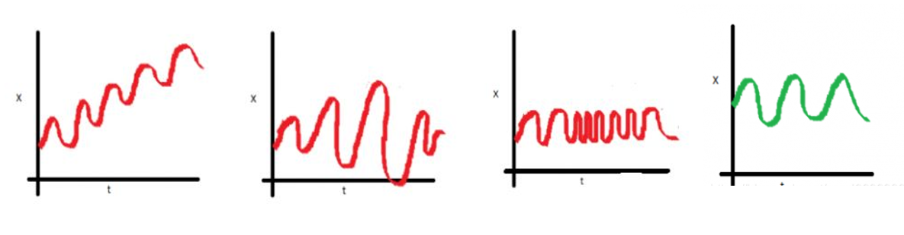
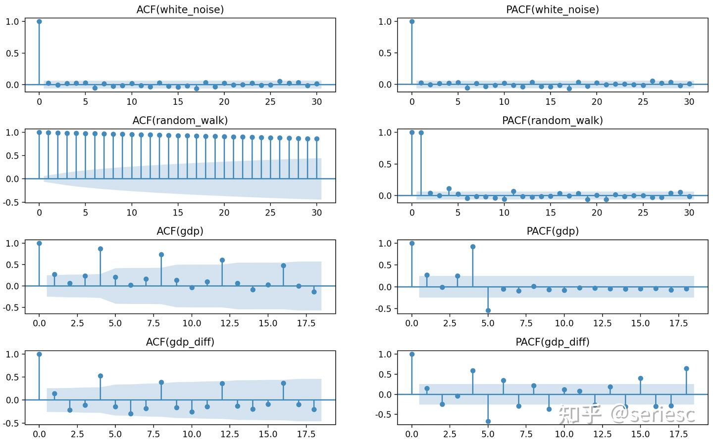

时间序列分析自学笔记
- 【Author】：Jack Zhang, Sun Yat-sen University
- 【Textbook】：Applied Econometric Time Series (4e), by Walter Enders
- 【Original Slides】：https: //www.time-series.net/powerpoint_slides
Chapter 1: Difference Equations 差分方程
[!IMPORTANT] 本章学习目标
- 阐述随机差分方程如何用来预测，说明该方程如何产生于熟悉的经济模型。
- 阐述差分方程的解的含义。
- 阐述如何用迭代求解随机差分方程。
- 阐述如何求差分方程的齐次解。
- 阐述求齐次解的过程。
- 阐述如何求高阶差分方程的齐次解。
- 阐述如何求确定的差分方程的特解。
- 阐述如何用待定系数法求随机差分方程的特解。
- 阐述如何用滞后因子求随机差分方程的特解。
1.1 时间序列模型
当我们拿到一个时间序列模型，我们可能不假思索地就能说出一些直观的信息。比如，GDP 逐年增长的趋势、增速放缓的趋势。这就是直观的描述性分析。

但是，很多规律并不那么容易发现——他们潜藏在大量的复杂的数据背后。我们研究模型的目的就是理解这些潜在的规律，并用以预测。这时，模型的作用就是 提取特征，用统计学的语言使得这些特征从模糊的感觉转变为确切的定理。
那么，有什么方法可以 “提取特征” 呢？ 当前，时间序列分析主要有两大“流派”——统计时间序列分析 和 机器学习方法。统计时间序列分析基于统计学方法对时间序列的概率特性进行估计，一般基于（线性） 随机过程假设。我们之前学习的 AR 模型、MA 模型、ARMA 模型等都属于这一类。另一类是机器学习方法，顾名思义，是基于机器学习方法从历史或相关序列中学习时间序列预测的方法。比如基于近邻的方法、RNN/LSTM、Transformer、TCN、Meta-Learning 等。我们目前主要学习的是统计时间序列分析方法。
1.1.1 时间序列分析的用途
传统用途：预测
基于线性模型 $y{t+1} = a_0 + a_1 y_t + \varepsilon{t+1}$，已知当期 $yt$，预测下一期期望 $E_t[y{t+1}] = a_0 + a_1 y_t$。
那么，$t+2$ 期？在第一期的基础上递推。
-$y{t+2}=a_0+a_1y{t+1}+\varepsilon{t+2}$
-$E{y{t+2}}=a_0+a_1E{y_{t+1}}=a_0+a_1(a_0+a_1y_t)=a_0+a_1a_0+(a_1)^2y_t$“递推”的本质就是【迭代】，即本章的核心内容。
例如：通过滞后一期的价格预测下一期价格，GDP 预测。
现代用途：
- 动态关系捕捉：分析变量间的滞后影响（如货币政策对经济的滞后效应）。
- 假设检验：验证经济理论（如随机游走假设）。
- 发展“典型事实”：从数据中提炼规律（如商业周期的波动特征）。
1.1.2 典型的时间序列问题
【单方程模型】随机游走假设：
- **模型**：$y_{t+1} = y_t + \varepsilon_{t+1}$，即 $\Delta y_{t+1} = \varepsilon_{t+1}$。 - **检验**：对更一般的方程 $\Delta y_{t+1} = a_0 + a_1 y_t + \varepsilon_{t+1}$，需验证 $a_0 = a_1 = 0$。 - 第 2 章到第 4 章将再次讨论如何恰当地估计单方程模型。【诱导方程和结构方程】
- **结构方程**（structural equation）的内生因变量依赖于另一个内生变量（自变量）的当期实现值。 - **诱导方程**（reduced-form equation，我们也常说是简约式，例如计量中的 IV 估计）则是将内生变量表示成该变量 **滞后值**、其他内生变量的 **滞后值**、**外生变量** 的当期和过去值以及 **扰动项** 的函数。 - 我们可以简单的用“是否自变量纯粹为滞后变量”来判别。[!Example]
【例】
消费函数中的当期消费仅仅依赖于滞后收入 $y_{t-1}$ 和扰动项 $\varepsilon$，它已经表示成了诱导方程。
而投资函数还不是诱导方程，因为当期投资还依赖于当期消费。那么，它的投资函数的诱导方程是什么？
【练习】：请推导 $y_t$ 的诱导方程。如果消去所有 $c$ 呢？
我们可以进一步简化得到下面的形式：
这是一个单变量诱导方程，$y_t$ 完全被表示为其滞后值和干扰项的函数。单变量模型用于预测特别有效，我们只需根据它当期和过去的实现值，就可对序列进行预测。
在学完第 2 章到第 4 章阐述的单变量时间序列分析方法后，第 5 章讨论当所有变量都被当作联合内生变量时的多变量模型估计。该章也讨论从已估诱导模型还原到结构模型所需的约束条件。
- 【误差纠正】无偏远期汇率（UFR）假设：
- **模型**：$s_{t+1} = f_t + \varepsilon_{t+1}$，其中 $s_{t+1}$ 为未来即期汇率，$f_t$ 为当前远期汇率。 - **回归检验**：$s_{t+1} = a_0 + a_1 f_t + \varepsilon_{t+1}$，要求 $a_0 = 0$、$a_1 = 1$，且残差 $\varepsilon_{t+1}$ 均值为零。 - **调整机制**：若 $s_{t+1} \neq f_t$，后续汇率和远期利率会通过下面的误差纠正模型联立调整： - 如果即期汇率与远期汇率相等（$s_{t+1} = f_t$），则即期和远期汇率倾向于保持不变。 - 如果即期与远期汇率之差为正，即 $s_{t+1} - f_t>0$，则预期：即期汇率会趋于下降，远期汇率会趋于上升。
- 【非线性动态模型】趋势-周期关系：
- **分解公式**：$y_t = Trend + Cycle + Noise$。 - **趋势**：长期稳定增长或下降（如 GDP 的长期趋势）。 - **周期**：围绕趋势的短期波动（如商业周期）。 - **噪声**：随机不可预测部分（如突发政策冲击）。 - **应用**：摩擦性失业（Noise）、结构性失业（Trend，如房地产业）、周期性失业（Cycle，如经济危机）
第 7 章将专门讨论一些具有更为复杂的 动态结构模型 的估计。
1.2 平稳性
平稳性是时间序列分析的基础。
平稳性的存在使得不同时间点的随机变量具有类似的统计性质，这是统计推断和预测的基础。类比随机实验，任何一次实验的统计性质是一致的，因此，可以进行统计推断。
平稳序列围绕 x 轴上下波动，非平稳序列则无序波动。平稳的本质是让系统稳定，让变量收敛。
平稳性有 严平稳（strictly stationary）和 弱平稳（weakly stationary）之分。
严平稳是非常强的假设，它认为只有当序列所有的统计性质都不会随着时间的推移而发生变化时，该序列才被认为平稳。该假设使时间序列与无数次随机实验一致，这难以用经验方法验证。
弱平稳又被称为宽平稳。弱平稳不对随机变量的分布作要求，这就类似于每一次随机实验，可以是不同的实验，但任意两次实验之间存在一定关系，即均值和协方差。弱平稳下数据的时间序列图是围绕一个常数水平以相同的幅度上下波动。弱平稳性使我们可以对未来观测进行推断，即预测。
严平稳太过严格，我们通常考虑弱平稳序列。
[!NOTE] 弱平稳的定义：
对于任意整数 $l$，如果 $y_t$ 的均值，以及 $y_t$ 和 $y_t-l$ 的协方差不随时间而改变，那么时间序列 $y_t$ 是弱平稳的。
换言之，当：$\mathbb{E}(yt)$ 是常数、$\mathbb{Cov}(y_t, y{t-l})$ 只依赖于 $l$ 时，时间序列 $y_t$ 是弱平稳的。
其中，$\gammal = \mathbb{Cov}(y_t, y{t-l})$ 称为 $yt$ 的间隔为 $l$ 的 自协方差，它满足：
（1）当 $l=0$ 时， $\gamma_0 = \mathbb{Cov}(y_t, y_t) = \mathbb{Var}(y_t)$；
（2）$\gamma_l = \gamma{-l}$ 这表明自协方差对于“预测未来“和”追溯过去”都是适用的。对应的，我们也可以定义 自相关系数。$\rho = \dfrac{\gammal}{\gamma_0}$，也即是 $\rho = \dfrac{\mathbb{Cov}(y_t, y{t-l})}{\mathbb{Var}(y_t)}$
或者，我们更通俗地认识：
[!Tip] 弱平稳（协方差平稳）需满足的条件：
- 均值恒定：$E(y_t) = \mu$（各时期数学期望恒定）
- 方差恒定：$\text{Var}(y_t) = \sigma^2$（各时期方差恒定）
- 协方差仅依赖时间间隔（而不随时间变化）：$\text{Cov}(yi, y_j) = \gamma{|i-j|}$（任意两时期的协方差仅与时间间隔绝对值有关）
怎么好像多了一个条件？事实上，方差恒定可以被涵盖在协方差不随时间变化的条件中。
1.3 差分方程及其解
1.3.1 什么是差分？
- 我们首先认识一下“差分算子”，虽然名字很陌生，但事实上我们在学习微积分的时候就已经了解它了。让我们回忆亿下高数的导数内容：
[!Note] 导数的定义
导数描述了一个函数在某一点处的变化率。导数的定义基于极限的概念。
给定一个实数函数 $f(x)$，如果存在极限
那么，这个极限值称为函数 $f(x)$ 在点 $x$ 处的导数 。或者，我们常简写为：
$\Delta$ 就是差分算子。一阶差分本质上就是做差。
微积分中允许自变量的变化趋近于零。但由于大多数经济数据都是离散型的，所以，允许时间跨度大于零会更有益。运用差分方程时，我们将单位标准化，使 $h$ 代表时期（例如，$h=1$）的单位变化。
一阶差分 $\Delta yt = y_t - y{t-1}$。
二阶差分 $\Delta^2 yt \equiv \Delta(\Delta y_t) = \Delta(y_t - y{t-1}) = (yt - y{t-1}) - (y{t-1} - y{t-2}) = yt - 2y{t-1} + y_{t-2}$
类似地，可以给出 n 阶差分的定义。此时，我们已 冒险 将差分方程理论推广得过远。在时间序列分析中，很少需要使用差分。在实际应用中，几乎不会使用 3 阶及更高阶的差分方程。
为什么是 “冒险”？——类比于天气预报，更长期限的预测更失真。在第 1.4.2.1 节中（1.4.2.1 迭代法），我们有更数理直观的解释。
1.3.2 什么是差分方程？
通常形式下，差分方程 将变量表示为该变量滞后值、时间和其他变量的函数。
[!Note]
趋势性：$T_t = 1 + 0.1t$
季节性：$S_t = 1.6\sin\left(\frac{t\pi}{6}\right)$
无规则：$It = 0.7I{t-1} + \varepsilon_t$
其中，趋势成分和季节成分都是时间 $t$ 的函数，而无规则成分则是它的滞后值和随机变量 $\varepsilon$ 的函数。
由于大部分情况下，我们讨论的是线性时间序列，可以只考察带常数系数的 $n$ 阶线性差分方程的特例。这种特殊类型的差分方程的形式为：
公式的结构可以分解为以下几个部分：
- 常数项 $a_0$
- 过去输出值的加权和：$\sum{i=1}^{n} a_i y{t-i}$，即从 $t-1$ 到 $t-n$ 的所有过去输出值的线性组合。$a_i$ 是权重。
- 当前外部输入 $x_t$（驱动因素、激励 、推动过程）。它可能是时间、其他变量的当期值或滞后值，和（或）随机干扰项的任一函数。通过恰当地选择推动过程，我们就可以得到大量重要的宏观经济模型。
你可能会差评：这个差分方程看起来一点也不差分。的确，让我们给它变个形：
它变丑了，也变得更让人眼熟了。
1.4 差分方程的求解方法
1.4.1 差分方程的解
好了，我们现在认识了差分方程。这就够了吗？当然不。我们的目标是估计它，换言之，我们要：求解差分方程。
在求解之前，我们最好还是先明确我们的预期目标，也就是 差分方程的解（solution）。
差分方程的解是将 $y_t$ 值表示为序列 $x_t$ 的元素和 $t$ 的函数。解式中可能包括一些初始条件（initial condtion，即 $y_t$ 的一些给定值）。
[!TIP]
解的主要特征在于：当时间 $t$ 和外部输入的 $x$ 取任何允许值时，它都满足差分方程。这使得我们可以对解进行验证。
换言之，只要满足差分方程，它就是差分方程的解。
【引例】：考察简单差分方程 $\Delta y_t = 2$ 的解
由于 $\Delta yt = y_t - y{t-1} = 2$，我们很容易证明 $y_t$ 是公差为 2 的等差数列。$y_t = 2t + c$ 是差分方程 $\Delta y_t = 2$ 的解，这里 $c$ 为任意常数。
根据定义，如果 $2t + c$ 为一个解，则必定满足 $t$ 的所有允许值。因此，对于 $t-1$ 期，有 $y_{t-1} = 2(t-1) + c$，现在将解代入方程得：$2t + c \equiv 2(t-1) + c + 2$。这是一个恒等式。这也说明差分方程的解不是唯一的，$c$ 的任意一个取值都对应着一个解。
我们发现，差分方程的解有点像通项公式。事实上，一阶线性递推数列的通项公式是“常数+等比”；二阶线性递推数列的通项公式是“等比+等比”的形式。
[!TIP]
解是一个函数而非数字。类似于数列的通项公式，我们最终求解差分方程的目标是一个涵盖每一个“特解”的函数，称为“通解”。我们将在后面的迭代法中介绍（尽管这些概念并不依赖于迭代求解方法）。
1.4.2 迭代法求解差分方程
尽管迭代法是一种最麻烦、最耗时的方法，但它很直观。
1.4.2.1 迭代法
一阶方程迭代：
方程：$yt = a_0 + a_1 y{t-1} + \varepsilon_t$。
迭代过程：
- 第一期 $y_1 = a_0 + a_1 y_0 + \varepsilon_1$。
- 第二期 $y_2 = a_0 + a_1 y_1 + \varepsilon_2 = a_0(1 + a_1) + a_1^2 y_0 + a_1 \varepsilon_1 + \varepsilon_2$。
- 第三期 $y_3 =a_0 + a_1 y_2 + \varepsilon_3 = a_0(1 + a_1 + a_1^2) + a_1^3 y_0 + a_1^2 \varepsilon_1 + a_1 \varepsilon_2 + \varepsilon_3$。
- 第 $t$ 期 ？
[!Tip]
更多次的迭代，就有更大的误差。这在数理上呼应了 1.3.1 什么是差分？ 关于更长时间序列预测的“冒险”。
极限情况：当 $t \rightarrow ∞$ 时
当 $|a_1| < 1$ 时：【第一项是几何级数，第二项趋于 0】
思考：相对于其他情况，我们更关心 $|a_1| < 1$ 的情况。为什么？
- 数理上，这时收敛。站在 $t$ 期的节点上，上一期的 $y_{t-1}$ 是已知的参数。当 $|a_1| \geq 1$，无穷级数发散。
- 仅仅是因为数理上收敛可以求出吗？经济意义是什么？（Hint：类似于 WLS，你认为 2015 年 GDP 对今年 GDP 影响大还是 2024 年 GDP 对今年 GDP 影响大？所以我们应该怎么赋予权重？）
验证：这是 $yt = a_0 + a_1 y{t-1} + \varepsilon_t$ 的解吗？代入公式验证是成立的。
如果 反向迭代，这个式子还成立吗？
将 $y_{t-1}$ 代入上述表达式中：
当 $|a_1| < 1$ 时，$t \rightarrow ∞$ 的极限情况：
通解：在第 1.4.1 节（1.4.1 差分方程的解）最后，我们提到：差分方程的解有点像通项公式。那么，应该能够写出一个 通解，以涵盖前面的各个解（称为 特解）。课本对通解的提出比较突兀，这是因为涉及了齐次解的内容，我们在第 1.4.2.2 节讨论这一点。
1.4.2.2 齐次解和通解
- 齐次解：
- 前面我们提到的是 $yt = a_0 + a_1 y{t-1} + \varepsilon_t$，仅考虑其中的齐次部分，就是齐次方程。
- 一阶齐次方程：$yt = a_1 y{t-1}$，这可以被视作等比数列，通项公式还记得吗？
- 该齐次方程的解称为 齐次解（homogeneous solution），为 $y_t =A×(a_1)^t= A a_1^t$（A 任取）。
- 收敛条件：$|a_1| < 1$。这与 1.2 平稳性 是呼应的。
[!Note] 一阶齐次方程的齐次解与平稳性
- 当 $|a_1| < 1$ 时：
- 当 $t$ 趋于无穷大时，$a_1^t$ 收敛于零。
- 如果 $0 < a_1 < 1$，则称为直接收敛。
- 如果 $-1 < a_1 < 0$，则称为震荡收敛。
- 当 $|a_1| > 1$ 时：
- 齐次解不稳定。
- 如果 $a_1 > 1$，齐次解随 $t$ 的增大趋于无穷大。
- 如果 $a_1 < -1$，齐次解是震荡发散性的。
- 当 $a_1 = 1$ 时：任意一个常数 $A$ 都满足齐次方程 $yt = y{t-1}$。
- 当 $a_1 = -1$ 时，方程的解正负交替变化：$t$ 取偶数，$a_1^t = 1$；$t$ 取奇数，$a_1^t = -1$。
- 通解： 正如我们在第 1.4.1 节（1.4.1 差分方程的解）最后部分所指出的，差分方程的解更像一种通项公式。那么，应该能够写出一个 通解，以涵盖 $yt = a_0 + a_1 y{t-1} + \varepsilon_t$ 的所有 特解。在第 1.4.2.1 节（1.4.2.1 迭代法）中，我们考虑到了一个比较特殊的特解：当 $t \rightarrow ∞$ 时的特解：
现在，我们构造 通解：其两个组成部分正是齐次解、特解。如上所述，齐次解为 $y_t = A a_1^t$，A 可以任意取值。
在通解的基础上，如果我们再施加初始条件 $y_0$，就可以消去任意常数 A 了。
1.4.3 解差分方程的通用步骤
我们已经分析了一阶的情况，现在考虑更高阶的。迭代法求解方程不宜用于高阶方程，在复杂的代数式面前，任何试图求解的努力都是徒劳的。那么，有什么好办法呢？
在经济分析中，出现更高阶的差分方程并不奇怪。根据萨缪尔森模型(1939)得到的 GDP 的诱导方程（见 1.1.2 典型的时间序列问题），就是 二阶差分方程 的例子。此外，在时间序列计量经济学中对二阶和更高阶差分方程的估计也相当典型。
[!TIP] 【通用步骤】
一阶例子中的结论直接适用于 n 阶差分方程。一般情况下，寻找特解更为困难，并且还有 n 个不同的齐次解。但是，解答时总是遵照以下四个步骤。第 1 步：建立齐次方程，求出 n 个齐次解；
第 2 步：求出一个特解；
第 3 步：求特解和所有齐次解的一个线性组合，求和得出通解；
第 4 步：将初始条件代入通解中，消去任意常数。
要考察齐次差分方程的解法，首先，我们考察二阶差分。按照上面的步骤，我们做个例题：
[!Note] 【例 1】 求解 $yt = 0.9y{t-1} - 0.2y{t-2} + 3$，初始条件 $y{0}=13$，$y_{1}=11.4$
第 1 步：建立齐次方程
找到齐次解：稍后我们将说明如何找到完整的齐次解。现在，我们直接给出两个齐次解为：
$y^h{1t} = (0.5)^t \quad \text{和} \quad y^h{2t} = (0.4)^t$
要证明第一个解，应注意到 $y^h{1,t-1} = (0.5)^{t-1}$ 和 $y^h{1,t-2} = (0.5)^{t-2}$。因此，如果满足：$(0.5)^t - 0.9(0.5)^{t-1} + 0.2(0.5)^{t-2} = 0$， 那么 $y^h_{1t}$ 就是一个解。等式两边同除以 $(0.5)^{t-2}$，问题就变为是否满足下式：$(0.5)^2 - 0.9(0.5) + 0.2 = 0$。显而易见，确实等于零，同理也可验证另一个。
第 2 步：求出一个特解。
显然，很容易证明特解 $y_{t}^{p}=10$ 也是一个解，因为 $10=0.9\cdot(10)-0.2\cdot(10)+3$。
第 3 步：合并特解和两个齐次解的线性组合
这里，$a1$ 和 $A{2}$ 为任意常数。
第 4 步：序列初始条件
在 0 期和 1 期，解必须满足
联立求解，得 $a1=1,A{2}=2$。因此，$y_t$ 的解为
1.4.4 高阶齐次解：特征根
第一步很麻烦，有没有什么办法？事实上，从验证齐次解的方式中，我们可以窥见特征根分析的端倪。下面，我们更系统地介绍如何得到齐次解。
设数列 ${xn}$ 的前两项 $x_1$ 和 $x_2$ 已知，且满足递推关系 $x{n+1} = pxn + qx{n-1}$。则称方程 $x^2 - px - q = 0$ 为该数列的 特征方程。特征方程的根为该数列的 特征根。
[!tip]
- 方程：$yt - a_1 y{t-1} - a2 y{t-2} = 0$。
- 特征方程：$\alpha^2 - a_1 \alpha - a_2 = 0$。
- 根的情况：
- 实根且不同：$y_t = A_1 \alpha_1^t + A_2 \alpha_2^t$。
- 实根且相同：$y_t = (A_1 + A_2 t) \alpha^t$。
- 虚根：用欧拉公式表示为 $y_t = r^t (C_1 \cos \theta t + C_2 \sin \theta t)$，其中 $r = \sqrt{a_2}$，$\theta = \arctan\left(\frac{\sqrt{4a_2 - a_1^2}}{a_1}\right)$。
- 稳定性条件：所有特征根绝对值小于 1。稳定性条件要求 r < 1，因此，当把根绘制在复数平面上时，必须让它们位于一个半径为 1 的圆内。在时间序列文献中，稳定性条件的简单表述是：所有的特征根都位于单位圆之内。
我们再看个例子：
[!note] 【例 2】：求齐次解
- 方程：$yt = 0.2 y{t-1} + 0.35 y_{t-2}$。
- 特征方程：$\alpha^2 - 0.2 \alpha - 0.35 = 0$，解得特征根 $\alpha_1 = 0.7$，$\alpha_2 = -0.5$。
- 齐次解：$y_t = A_1 (0.7)^t + A_2 (-0.5)^t$。
很好！我们会算第一步了。返回刚才的例 1，我们可以重新算一下。
1.4.5 特解的处理
除了第一步对于高阶齐次解计算有着精妙的技巧，在例 1 中，我们非常不负责任的“显然易得”了特解。也很显然，我们的运气可能不总是能让我们“显然”发现特解。基于此，我们这一小节讨论特解的情况。需要强调的是，由于特解本就是“妙手偶得”的，我们在（1.4.4 高阶齐次解：特征根）中讨论的所有找特解方法都只是方便找特解的技巧。
1.4.5.1 推动过程为零的特解
寻找差分方程的特解需要智慧和毅力，方法的选取主要取决于序列 ${x}$ 的形式。遵循由浅入深的原则，我们先讨论一种特殊情况的特解，即 当 $x_t=0$ 时 的特解。
当序列 ${x_{t}}$ 的所有元素均为零时，差分方程变为
这和前面的例 2 非常相似，事实上，例 2 是给定参数的二阶特例。在第 1.4.4 节（1.4.4 高阶齐次解：特征根）中，我们只算出了例 2 的齐次解，还没有得到方程的通解。遵循第 1.4.3 节（1.4.3 解差分方程的通用步骤）的通用步骤，我们对方程 $yt = 0.2 y{t-1} + 0.35 y_{t-2}$ 的求解还需要找到特解。通过下面对 $n$ 阶情况的讨论，我们应该能够为例 2 的求解画上圆满的句号。
由于我们正在找的是特解，所以我们不用顾及任何“大而全”的普适性，只需要找最特殊的就足够了。直觉告诉我们，$y$ 取相同值（即 $yi=y{i-1}=\cdots=c$）应该是目标差分方程最特殊的解了。虽然我们在这里也不可避免的“显然易得”了，但相较于例 1 的“显然”，这里的直觉容易得多。将常解 $y_i=c$ 代入得到 $c=a_0+a_1c+a_2c+\cdots+a_nc$，因而
由于分式的分母不能为 0，我们分类讨论：
只要 $(1-a_1-a_2-\cdots-a_n)$ 不等于零，$c$ 值就是差分方程的解。因此，差分方程的特解就为 $y^p_i=\dfrac{a_0}{1-a_1-a_2-\cdots-a_n}$。
如果 $1-a_1-a_2-\cdots-a_n=0$，$c$ 值是待定的，必须寻找解的其他形式。课本的讨论为我们提供了下一步的方向：我们应该考虑尝试 $y^p_i=ct$ 作为解，如果还不成立，就继续尝试 $y^p_i=c \cdot t^2$、$y^p_i=c \cdot t^3$…… 总有一个会是特解的。
接下来，我们兑现前面的承诺，对例 2 的特解进行讨论。
[!Note] 【例 2】 的特解
对于方程：$yt = 0.2 y{t-1} + 0.35 y_{t-2}$，我们取常解 $y_i=c$ 的特殊情况。代入得：
其中，$a_0=0$，$a_1=0.2$，$a_2=0.35$。我们得到差分方程的特解 $c$，发现就等于 0。更正式一点的写法是：
有了特解 $y^p_i=0$ 和齐次解 $y_t = A_1 (0.7)^t + A_2 (-0.5)^t$，我们就可以得到该差分方程的通解了。
1.4.5.2 待定系数法
那么，如果特解比较随机，怎么处理？
当序列 ${y_t}$ 含有随机成分时，有两种求特解的方法。我们先讨论待定系数法。
待定系数法的关键在于，线性方程具有线性解。因此，一个线性差分方程的特解必定是线性的。此外，求得的解仅依赖于时间、常数和推动过程的元素。因此，即使解的系数未知，仍有可能求得解的准确形式。这种方法涉及一个假设的解，可称这个假设的解为 挑战解(challenge solution)，它是实际方程中应当出现的所有项的线性函数。这样，问题就转化成了寻找所有满足差分方程解的待定系数的值。
1.4.5.2.1 含有确定性成分的情况
我们首先看两个含有确定性成分的情况：
- 情况 1：含指数的例子。
在这种情况下，我们令 $x_t$ 取指数形式 $b \cdot (d)^{rt}$，其中，b、d、r 都为常数。由于 r 通常被解释为增长率，我们在有关增长的研究中更可能碰到它。我们运用一阶差分方程阐述求解过程：
特别地，当 $b=0$ 的时候，差分方程退化为 $x_t=0$ 的差分方程。事实上，我们可以把 $(d)^{rt}$ 看作 ${(d^{r})^t}$，即把 $d^{r}$ 看作整体。
我们可以 假设特解的形式 为：（即挑战解为）
其中，$c_0$ 和 $c_1$ 都是常数。如果该方程确实是一个解，可以将其代入递推公式得到一个恒等式。通过恰当的代换，得到
整理这个公式，如果这个公式成立，有 $c_0$ 和 $c_1$ 满足
因此，特解就为
这个解的特点就是：$y^p_t$ 等于常数 $\dfrac{a_0}{1-a_1}$ 加上一个增速为 $r$ 的表达式。
注意，对于 $|d^r|<1$，特解会收敛为 $\dfrac{a_0}{1-a_1}$。
同样地，在 $a_1=1$ 或 $a_1=d^r$ 的时候，必须寻找解的其他形式。这时的技巧是：当 $a_1 =1$ 时，尝试使用 $c_0=ct$ 作为解；而当 $a_1=d^r$ 时，尝试使用 $c_1=tb$ 作为解。其中所用的方法完全适用于高阶方程。
- 情况 2：确定性时间趋势。
这时，序列 ${x_t}$ 可表示为关系式 $x_t= bt^d$，其中 b 为常数，d 为正整数。由于 $yt$ 依赖于 $t^d$，则 $y{t-1}$ 依赖于 $(t-1)^d$，$y_{t-2}$ 依赖于 $(t-2)^d$，等等。这样，特解的形式为：为找到 $c_i$ 的取值，可将特解代入，从 $c_i$ 的恒等式中得到每个 $c_i$ 的取值。
【发现】：这个特解的假设和情况 2 正好形成对照：1
2
3
4
5[**特解的情况**]
| $x_t$ 形式 | 假设的特解（一阶差分） |
| :-----------------------: | :--------------------------: |
| 令$x_t$取指数形式$b \cdot d^t$ | $y_{t}^{p}= c_0+c_1 d^t$ |
| 令 $x_t$ 取幂函数形式 $b \cdot t^d$ | $y_t^p = c_0 + c_1 t^d$ |
尽管 $d$ 可以取多个值，但在经济应用中，模型中通常含有一个线性时间趋势 ($d=1$)。 举个例子，请考察 2 阶差分方程 $yt = a_0 + a_1 y{t-1} + a2 y{t-2} + bt$。假设解为：
其中，$c_0$ 和 $c_1$ 都是待定系数，试着将这个“挑战解”代入该 2 阶差分方程，得到
现在选择 $c_0$ 和 $c_1$ 的值，使得对 $t$ 的所有可能取值都为恒等式。如果合并所有常数项和包括 $t$ 在内的所有项，则所要求的 $c_0$ 和 $c_1$ 的取值就为
1.4.5.2.2 一般化
我们已经考虑了含有确定性成分的情况，现在我们外推到一般化的情况。也就是说，我们考虑包含 $\varepsilon_t$ 的 ${x_t}$。这时，我们应该如何使用待定系数法？
- 一阶方程：$yt = a_0 + a_1 y{t-1} + \varepsilon_t$。
序列 ${y_t}$ 的特点是特征解仅依赖于常数项、时间 $t$ 和序列 ${\varepsilon_t}$。因此，我们设定的挑战解应该包括常数项、时间趋势项和关于 $\varepsilon$ 的项。
考虑到 $\varepsilon$ 是白噪声（零均值、无自相关），其特解需体现历史扰动的累积效应，即：过去每一期误差项 $\varepsilon$ 各自对当前值 $yt$ 的影响求和。由于各期对现在的影响不尽相同（越接近现在的权重应该更高，这在第 1.3.2 节中曾阐释过），因此对于每个误差项都应该配有对应的权重参数（记为 $\alpha$，$0<\alpha<1$）。由此，特解中应该包含 $\sum{i=0}^{\infty} \alphai \varepsilon{t-i}$。
综上，我们设定的挑战解为：
代入求解得，$b_1=0$，$b_0 = \frac{a_0}{1 - a_1}$。
- 二阶方程：$yt = a_0 + a_1 y{t-1} + a2 y{t-2} + \varepsilon_t$
- 挑战解：$yt = b_0 + b_1 t + b_2 t^2 + \sum{i=0}^\infty \alphai \varepsilon{t-i}$。
- 代入求解：通过比较系数确定 $b_0, b_1, b_2$ 及 $\alpha_i$。
首先，考虑当 $a_1 + a_2 \neq 1$ 时的情况，由于 $(1 - a_1 - a_2)$ 不为零，那么，$b_2$ 的取值必须等于 0。在 $b_2 = 0$ 的情况下，又因为 $t$ 的系数必须等于零，所以，$b_1$ 也应为 0。在给定 $b_1 = b_2 = 0$ 时，必得 $b_0 = \dfrac{a_0}{1 - a_1 - a_2}$。
相反，如果 $a_1 + a_2 = 1$，则 $b_t$ 的解的取值取决于 $a_0, a_1$ 和 $a_2$ 的特定取值。
关键在于齐次方程的稳定性条件就是特解的收敛条件。如果齐次方程的任意特征根都等于 1，那么，多项式时间趋势就将出现在特解中。多项式的阶数就是单位特征根的个数，这一结论也可推广到高阶方程。
1.4.5.3 滞后算子
如果不需要知道特解中的系数的实际值，则运用滞后算子（lag operator）的方法通常比待定系数法更为方便。
定义：滞后算子 $L$ 被定义为线性算子，因而对 $y_t$ 取任意值，均有：
滞后算子 $L$ 仅意味着将序列 $yt$ 向后移动一期，即 $L{y_t} = y{t-1}$。请问，$L^2_{y_t}=?$
性质:
- 常数的滞后值为常数： $L_c = c$。
- 分配律：$L(y1 + y_2) = Ly_1 + Ly_2 = y{t-1,1} + y_{t-1,2}$。
- 结合律： $L^iLyj = L^{i+j}y = y{t-i-j}$，注意 $L^iyt = y{t-i}$。
- 取负次方： 实际上为超前算子: $L^{-1}yt = y{t+1}$。为了便于解释，可定义 $j = -i$，并设 $L^jyt = y{t+j}$。
- 无限求和：
- 对于 $|\alpha| < 1$，有 $(1 + a L + a^2 L^2 + \cdots)L^n y_t = \dfrac{y_t}{1 - a L}$。
- 对于 $|\alpha| > 1$，有 $[1 + (aL)^{-1} + (aL)^{-2} + (aL)^{-3} + \cdots]y_t = \dfrac{-aL{y_t}}{1 - aL}$。
滞后算子的应用：
- 滞后算子为书写差分方程提供了一种简洁的记号。运用滞后算子，可以将 p 阶方程 $yt = a_0 + a_1 y{t-1} + \cdots + ap y{t-p} + \varepsilon_t$ 写为：
其中，$A(L)$ 为多项式 $(1 - a_1 L - a_2 L^2 - \cdots - a_p L^p)$。它的成立是基于此前的 $y$ 对于现在而言都是参数。
- 由于 $A(L)$ 可被视为滞后算子的多项式，因此记号 $A(1)$ 可用于表示所有系数之和：
- 用滞后算子解线性差分方程：
再次考虑一阶方程 $y{t}=a_0+a_1y{t-1}+\varepsilon_{t}$，式中，$\mid a_1 \mid <1$。根据 L 的定义，构造
解 $y_t$，我们得到：
根据性质(1)，可知 $La_0=a_0$，因而 $\dfrac{a_0}{1-a_1L}=a_0+a_1a_0+a_1^{2}a_0+\cdots =\dfrac{a_0}{1-a_1}$。
根据性质(5)，可知 $\dfrac{\varepsilon{t}}{1-a_1L}=\varepsilon{t}+a1\varepsilon{t-1}+a1^{2}\varepsilon{t-2}+\cdots$，合并解的两个部分，便得到迭代法得到的特解。
- 【一般化】滞后算子可以把方程表示为：
其中，$A(L)$ 和 $B(L)$ 分别为 p 阶和 q 阶的多项式。该模型的特解为：
如果想了解序列的实际系数，最好采用待定系数法，滞后算子的魅力在于能够简洁地标记特解。
1.5 自回归（AR）模型
不知道你是否有注意到，在 1.4 节中，我们对差分方程的讨论主要围绕着的是 1.3.2 节提出的“一种特殊类型的差分方程”。现在，我们正式认识下这个“威名赫赫”的重要模型——自回归模型（Auto-regression Model），简称 AR($p$)。值得注意的是，这一节的内容大多数都已经在前面讲过，如果说前面的讲法更偏数学，这一节的讲法则是更统计学的。
1.5.1 自回归模型
[!Note] 定义（自回归模型）
如果时间序列 ${y_t}$ 能用如下形式表示：则称 ${yt}$ 服从 $p$ 阶自回归模型，记为 AR($p$)，其中，p 为模型的阶数， $\varepsilon_t$ 是均值为 0、标准差为 $\sigma\varepsilon$ 的白噪声序列。
AR($p$) 模型表示：给定过去的数据时，过去的 $p$ 个值 $y_{t-i}(i=1,2,\ldots,p)$ 联合决定 $y_t$ 的条件期望。
1.5.2 AR(1)模型
- 当阶数 $p = 1$ 时，AR($p$)模型简化为 AR(1)模型，即
AR(1)模型刻画了一个随机过程或时间序列：${r_t, t \in Z}$；
根据 AR(1)模型定义有：
- 条件期望：$E(yt | y{t-1}) = a0 + a_1 y{t-1}$
- 条件方差：$Var(yt | y{t-1}) = \sigma_\varepsilon^2$
1.5.2.1 AR(1)的线性特征
正如我们在 1.4.2.1 迭代法 中所做的，将 AR(1)模型的递推可以得到
- 当 $|a_1| < 1 \quad t \rightarrow ∞$，第一项是几何级数，第二项趋于 0，有：
这是一个线性时间序列，被称为 MA($∞$) 形式。自然地，我们会问：什么是 MA？MA 是移动平均模型的简写，我们会在 2.1.2 移动平均模型（MA） 内容中更详细的介绍它。关于 AR 和 MA 的互推条件，我们也将在 2.3.5.2 可逆性 中进一步论述。
1.5.2.2 AR(1)的平稳性
AR(1)模型的平稳性指时间序列 ${y_t}$ 是否是一个平稳时间序列。直观理解，任意给定一个初始值 $y_0$，经过一段时间后，序列可以稳定下来，即围绕某个固定值以相同的幅度上下波动。
不是所有 AR(1)模型刻画的随机过程都是平稳时间序列：当 AR(1)模型刻画了一个平稳的时间序列，则称 AR(1)模型是平稳的；当 AR(1)模型刻画了一个非平稳的时间序列，则称 AR(1)模型是非平稳的。平稳的 AR(1) 模型才能用于预测。
AR(1)模型平稳性的充要条件是：$|a_1| < 1$。
[!Note] 证明：AR(1)模型平稳性的充要条件是：$|a_1| < 1$。
首先，我们简单回顾 1.2 平稳性 节对平稳性的介绍：
严平稳太过严格，我们通常考虑弱平稳序列。
弱平稳的定义：当 $E(yt)$ 是常数、$Cov(y_t, y{t-l})$ 只依赖于 $l$ 时，时间序列 $y_t$ 是弱平稳的。
然后，我们开始证明：
1. 充分性：
（1）当 $|a_1| < 1$，我们先考察 $E(y_t)$ 是否为常数：（2）然后，我们考察 $|a_1| < 1$ 时的协方差：
根据协方差的定义，我们可以将其展开为双重求和：
由于 $\varepsilon$ 是一个方差为 $\sigma^2$ 的白噪声过程，不同时间的 $\varepsilon$ 不相关，则协方差项仅在时间点相等时非零（$=\sigma^2$），即当 $t - i = t - l - j$ 时，也就是 $i = l + j$。因此，双重求和中只有当 $i = l + j$ 时才有贡献。将 $i$ 替换为 $l + j$，我们得到单重求和：
这表明，协方差只依赖于 $l$，与 $t$ 无关。如果认为双重求和转化为单重求和太复杂，2.3.3.1 自相关函数（ACF） 还提供了另一种递推的方法。
综上，AR(1)模型在 $|a_1| < 1$ 时满足弱平稳的定义。
2. 必要性
假设 ${yt}$ 是平稳时间序列，对 AR(1)公式 $y_t = a_0 + a_1 y{t-1} + \varepsilon_t$ 两边取期望得到：两边取方差得到：
- 根据 $yt = \frac{a_0}{1 - a_1} + \sum{i = 0}^∞ a1^i \varepsilon{t-i}$，$yt$ 完全由 $t$ 期及以前的冲击决定，进而 $y{t-1}$ 完全由 $t-1$ 期及以前的冲击决定，由于冲击之间的独立性，$\mathbb{Cov}(y_{t-1}, \varepsilon_t) = 0$；
- 【 非常重要 】基于 ${yt}$ 平稳的假设，方差在时间上恒定，即 $\mathbb{Var}(y_t)=\mathbb{Var}(y{t-1})$。
由此可得到：
为了使 $\mathbb{E}(y_t) = \dfrac{a_0}{1 - a_1}$ 存在且为常数，则要求 $a_1 \neq 1$ ；
为了使 $\mathbb{Var}(y_t) = \dfrac{\sigma_a^2}{1 - a_1^2}$ 存在且为正常数，则要求 $|a_1| < 1$ 。
即 ${y_t}$ 为平稳序列要求 $|a_1| < 1$。
1.5.2.3 AR(1)的统计特征
在上一节中我们得到：对于平稳 AR(1)序列 $yt = a_0 + a_1 y{t-1} + \varepsilont$ ，有：$\mathbb{E}(y_t) = \dfrac{a_0}{1 - a_1}$ ，$\mathbb{Var}(y_t) = \dfrac{\sigma\varepsilon^2}{1 - a_1^2}$。其中 $a_0$ 是截距项，$a_1$ 是滞后项系数。
当 $a_0 = 0$ 时，$\mathbb{E}(y_t) = 0$，这表明没有截距项的 AR(1)模型，时间序列的均值为 0。
当 $a_1 = 0$ 时，此时时间序列 ${y_t}$ 变为白噪声序列，方差最小；当 $a_1 ≠ 0$ 时，序列 ${y_t}$ 的方差变大，这说明时间序列 ${y_t}$ 自相关系数越大，时间序列的方差越大，波动越剧烈。
下面，我们考察 AR(1)模型的自相关系数。根据方程，由于 因此自相关系数（如果忘记了自相关系数，请参阅 1.2 平稳性）为： 这说明：当 $∣a_1∣<1$ 时，弱平稳 AR(1) 序列的自相关函数随滞后阶数 $l$ 增大而指数衰减。
1.5.3 AR(2)模型
当阶数 $p = 2$ 时，AR(p) 模型简化为 AR(2) 模型，形式如下：
1. AR(2)模型的线性性质： 首先，将 AR(2) 转换为 VAR(1) 形式：
设 $\mathbf{Y}t = (y_t, y{t-1})^\top$，$\mathbf{u}t = (\varepsilon_t, 0)^\top$，则方程可改写为： $$ \mathbf{Y}_t = \mathbf{A}_0 + \mathbf{A}_1 \mathbf{Y}{t-1} + \mathbf{u}_t $$
向前递推得到：当矩阵 $\mathbf{A}1$ 的特征值都位于单位圆内时，$\mathbf{A}_1^\infty = 0$，方程可简化为：$$ \mathbf{Y}_t = (1 - \mathbf{A}_1)^{-1} \mathbf{A}_0 + \sum{i=0}^\infty \mathbf{A}1^i \mathbf{u}{t-i} $$ 进一步得到 $y_t$ 的表达式：
其中 $b_i = (1, 0)\mathbf{A}_1^i(1, 0)^\top$，即 $\mathbf{A}_1^i$ 的第 $(1, 1)$ 个元素。 $\mu = (1, 0)(1 - \mathbf{A}_1)^{-1} \mathbf{A}_0$ 。
2. AR(2)模型平稳条件
利用 1.4.5.3 节讲到的滞后算子改写：$yt = a_0 + a_1 y{t-1} + a2 y{t-2} + \varepsilon_t$ ，得到：$$
\begin{align}
\Big(1 - a_1 L - a_2 L^2\Big) y_t = A(L) y_t = a_0 + \varepsilon_t
\end{align}
\begin{align}
A(x) = 1 - a_1 x - a_2 x^2 = 0
\end{align}
线性特征：类似于 AR(2)，最后递推得到：
- 当特征根均在单位圆内时，为线性时间序列。
平稳性：
- AR(p) 模型的特征多项式：
- AR(p) 模型对应的逆特征方程：
- AR(p) 模型平稳的充要条件： 逆特征方程的所有根均位于 单位圆外（模长 > 1）。
或通过变量替换 $x = 1/L$，方程改写为 要求所有特征根均位于 单位圆内（模长 < 1）。
Chapter 2: 平稳时间序列模型
[!IMPORTANT] 本章学习目标
阐述随机线性差分方程理论。
拓展在估计 ARMA 模型中使用的工具。
考察平稳和非平稳模型的时间序列性质。
考察多种统计检验方法来检验模型的充分性。文中举了几个例子，详细地分析了估计出的 AR-MA 模型，并说明如何运用恰当的已估模型进行预测。
推导不同 ARMA 过程的理论自相关函数。
推导不同 ARMA 过程的理论偏自相关函数。
阐述 Box-Jenkins 方法在模型选择过程中是怎样依赖于自相关和偏自相关的，
扩展 Box-Jenkins 模型选择工具的完备集。
检验时间序列预测的性质。
以利率期限结构模型为例证明 Box-Jenkins 方法。
阐述模型序列如何包含季节因素。
扩展模型精确度的诊断性检验。
阐述组合预测为何明显优于单个模型的预测。
2.1 随机差分方程模型
目标：模拟动态经济过程
2.1.1 白噪声过程
白噪声（white-noise）过程是一种特殊的时间序列模型，对应的是纯随机序列。
[!Note] 定义：白噪声
若序列中每个元素均值都为零，同时具有同方差，且与所有其他的实现值之间不存在自相关，则序列 ${\varepsilon_t}$ 为白噪声过程。白噪声过程的统计特征：零均值，同方差，无自相关（协方差为 0）。对于正态分布而言，不相关即可推出独立，所以如果该白噪声如果服从正态分布，则其还将互相独立。
根据 白噪声过程的统计特征，我们可以得到：如果序列 ${\varepsilon_t}$ 为白噪声过程，有：
【零均值】：若符号 $E(x)$ 代表 $x$ 的理论均值，对每个时期 $t$，有： 【同方差】：用 $Var(x)$ 代表 $x$ 的方差，对每个时期 $t$，有： 或者，由于 $Var(x)= E(x^2)- [E(x)]^2$ ，结合零均值特征 $E(x)≡0$，有：
【无自相关（协方差为 0）】 对所有的 $j$ 和 $s$，有： 或者，由于 $Cov(x，y)=E(xy)-E(x)E(y)$，结合零均值特征 $E(x)=E(y)=0$，有：
[!Tip] 思考：白噪声 是平稳过程吗？
（提示：结合 1.2 平稳性 对于时间序列弱平稳的讨论）
- 均值恒定：$E(y_t) = \mu$（各时期数学期望恒定）
- 方差恒定：$\text{Var}(y_t) = \sigma^2$（各时期方差恒定）
- 协方差仅依赖时间间隔（而不随时间变化）：$\text{Cov}(yi, y_j) = \gamma{|i-j|}$（任意两时期的协方差仅与时间间隔绝对值有关）
我们发现，白噪声符合以上三个要求，白噪声是平稳过程。
事实上，白噪声序列一定是平稳序列, 而且是最简单的平稳序列。若给定时间序列是白噪声序列，则无需预测。
2.1.2 移动平均模型（MA）
现在，我们用白噪声过程来构造移动平均模型（MA 模型）。MA 模型基于白噪声序列的假设，描述的是当前时间点的数据与过去噪声的关系。
2.1.2.1 移动平均模型是什么？
移动平均模型（MA）的 核心思想 是：我们可以把一个时间序列看作是过去若干期噪声的加权平均，即当前的观察值是由过去的白噪声通过一定的线性组合得到的。
即，MA(q)模型可以写成：
对任意时期 $t$，对 $\varepsilont$，$\varepsilon{t-1}$，…，$\varepsilon_{t-q}$ 依次取值并乘以对应的 $\beta_i$ 即可计算出 $x_t$，我们把这样的序列称为 $q$ 阶移动平均（moving average），用 MA $(q)$ 表示。
- $x_t$ 是我们感兴趣的时间序列在时间点 $t$ 的观察值。
- $\varepsilont, \varepsilon{t-1}, \varepsilon{t-2}, \dots, \varepsilon{t-q}$：这些是白噪声项，每个时间点的值都是独立同分布的，通常假设为正态分布。这些项的均值为 $0$，方差为 $\sigma^2$（常数）。$\varepsilont$ 是当前时刻的白噪声，$\varepsilon{t-1}$ 是上一时刻的白噪声，依此类推，$\varepsilon_{t-q}$ 是 $q$ 个时刻前的白噪声。
- $\beta_1, \beta_2, \dots, \beta_q$：这些是 MA 模型的参数，每个参数 $\beta$ 都对应一个白噪声项。它们衡量的是对应的白噪声对当前时间点的影响程度。
- $q$ 是阶数，表示有多少个过去的白噪声项被纳入模型，指的是在模型中包含的过去白噪声项的数量。例如，如果 $q=2$，那么模型就包含了 $\varepsilon{t-1}$ 和 $\varepsilon{t-2}$ 两个白噪声项。
[!Excercise] 练一练：请写出 MA($∞$)
【补充】：在一些版本的 MA 模型中，模型被写作 它较上面模型有两处改变：（1）多包括时间序列的均值或期望值 $\mu$ ，$\mu$ 对所有的时间点都是相同的。不加 $\mu$ 的时间序列可以被视为 已经通过差分或去趋势转换为均值为零 的序列。（2）为方便采用标准化，使 $\beta_0$ 恒等于 1。
[!Tip] 为什么叫做【移动平均模型】？
移动平均模型（MA）认为：大部分时候时间序列应当是相对稳定的。在稳定的基础上，每个时间点上的值受过去一段时间内、不可预料的各种偶然事件影响而波动。即在一段时间内，时间序列应该是围绕着某个均值上下波动的序列，时间点上的值会围绕着某个均值移动，因此模型才被称为“移动平均模型“。它的预测值是过去白噪声的加权平均。
[!Note] MA 模型的前提假设
移动平均模型（MA）的基本假设可以从以下几个方面来理解：
平稳性：MA 模型假设时间序列是平稳的。这意味着序列的主要统计属性，如均值和方差，不随时间变化。这个假设强调了序列在长期内保持稳定的行为，而在短期内可能会受到随机因素的影响。
白噪声：MA 模型假设存在一个白噪声序列。白噪声是随机误差项，它的均值为 0，方差为常数，且各个时间点上的值是相互独立的。这个假设强调了在一段较短的时间内，时间序列的波动可能受到不可预测的随机因素的影响。
线性：MA 模型假设时间序列可以被过去的白噪声项的线性组合表示。这就是模型被称为“移动平均”模型的原因，因为它的预测值是过去白噪声的加权平均。
有限历史影响：MA 模型假设只有过去的 q 个白噪声才对当前时间点的值有影响，其中 q 是模型的阶数。换言之，过去更久的白噪声对当前值没有直接影响（如 $cov(xt,x{t-q-1})=0$）。
值的关联性与白噪声的独立性：MA 模型假设不同时间点的值之间是关联的，这反映了历史影响时间序列的长期趋势。而偶然事件在不同时间点上产生的影响（即白噪声）是相互独立的，这反映了在短期内，时间序列的波动可能受到不可预测的随机因素的影响。
【举个例子】：影响明日会不会下雨的真正因素并不是“今天”或“昨天”这些时间概念本身，而是风、云、日照等更加客观和科学的因素（这些其实就是 MA 模型认为的“偶然因素”）。不过也能够理解，随着季节的变化、时间自有自己的周期，因此天气也会存在季节性的周期，因此从长期来看时间序列的趋势是恒定的。
2.1.2.2 MA(q) 的平稳性
我们先展示结论：
[!Note] MA(q) 的平稳性：
- 当 $q$ 为有限值时，MA(q) 一定是平稳过程。
- 当 $q \to \infty$（无穷阶 MA），若对任意 $s$ 有 $\beta0 + \beta_1 \beta{s+1} + \beta2 \beta{s+2} + \cdots$ 收敛，则 MA($\infty$) 也是平稳过程。
下面我们为上述结论给出证据。我们的逻辑是：先针对 MA(1)、MA(2) 的情况讨论，然后外推。
【MA(1) 的平稳性】：考虑 MA(1)：$xt = \beta_0 \varepsilon_t + \beta_1 \varepsilon{t-1}$
为体现一般性，我们考虑未经过【去趋势 $\mu=0$ 】和【标准化校准 $\beta_0=1$ 】 的 MA(1)。
结合 1.2 平稳性 对于时间序列弱平稳的讨论，我们要说明 MA(1) 平稳，就要证明其满足：
- 均值恒定：$E(x_t) = \mu$（各时期数学期望恒定）
- 方差恒定：$\text{Var}(x_t) = \sigma^2$（各时期方差恒定）
- 协方差仅依赖时间间隔（而不随时间变化）：$\text{Cov}(xi, x_j) = \gamma{|i-j|}$（任意两时期的协方差仅与时间间隔绝对值有关）
1 | |
1 | |
- 复合预测值的构造：给定 $n$ 个模型的提前一步预测值序列 ${f{i1}, f{i2}, \ldots, f{in}}$，构造复合预测值为：$$f{ci} = w1 f{i1} + w2 f{i2} + \cdots + wn f{ni}, \quad \text{其中} \sum_{i=1}^n w_i = 1$$
- 复合预测值是否合理？
- （1）复合预测中，点估计的 无偏性：
若每个模型预测值无偏（$E{t-1}(f{it}) = yt$），则复合预测值也是无偏的： $$ E{t-1}(f_{ci}) = y_t$$ - （2）复合预测误差及其方差
以两个模型的复合为例，定义模型 1 和模型 2 的预测误差分别为 $e{t1} = y_t - f{t1}$ 和 $e{t2} = y_t - f{t2}$，则复合预测误差为： 复合预测误差的方差： 假设两模型的预测误差满足：$\text{Var}(e{t1}) = \text{Var}(e{t2}) = \sigma^2$， $\text{Cov}(e{t1}, e{t2}) = 0$，权重 $w1 = 0.5$（简单平均）。则复合预测误差的方差为：$$ \text{Var}(e{ct}) = 0.25\sigma^2 + 0.25\sigma^2 = 0.5\sigma^2 $$ 发现： 组合预测的方差为单一模型方差的一半，显著降低了预测不确定性。
- （1）复合预测中，点估计的 无偏性：
- 复合预测值是否合理？
- 最优权重
- 尽管简单平均能减少预测误差方差，但寻找最优权重使预测误差方差最小化仍十分必要。
- 最优权重为：
- 不包含协方差项的最优权重：
- Granger 和 Ramanathan(1989)使用回归模型提出了一个构造权重的等效方法： 可令 $\alpha_0=0$, $\alpha_1+\alpha_2+\cdots+\alpha_n=1$。在这些条件下, $\alpha_i$ 直接解释最优权重, $w_i^*$ 应设置等于 $\alpha_i$。
- 运用 SBC 作为权重因素：令 $SBCi$ 表示模型 i 中的 SBC，令 $SBC^$ 表示最适模型中的 SBC。可得 $\alpha_i = \exp\left[\dfrac{(SBC^ - SBC_i)}{2}\right]$ 并构造权重： $$w_i^* = \frac{\alpha_i}{\sum{i=1}^{n} \alpha_i}$$ 最适模型权重为 $\dfrac{1}{\sum \alpha_i}$。由于 $\alpha_i$ 随 $SBC_i$ 的值减少，不太适合的模型在 SBC 值较大时具有更小的权重。
2.3.6 季节性模型
- 最优权重
- 时间序列中的季节性是在 S 个时间段内重复的常规变化模式。例如，月度数据存在季节性，高值往往总是出现在某些特定月份，而低值往往总是出现在其他特定月份。
- 季节性通常会导致序列不稳定，因为季节性跨度内某些特定时间（例如，月份）的平均值可能与其他时间的平均值不同。例如，我们的冷却风扇在夏季的销量将始终较高。
- 季节性模型通常是乘法模型，而不是加法模型。 乘法模型包括一个或多个非季节性参数与一个或多个季节性参数的乘积。
- 具有季节性时间序列的 ARMA 模型（季节性自回归移动平均，又叫 SARMA 模型）：其中季节性成分捕捉长期模式，非季节性成分调整了对短期变化的预测。
- $\theta_0$ 是截距参数。
- $\phi_1$ 是非季节性一阶自回归参数。
- $\phi_{12}$ 是季节性自回归参数。
- $\theta_1$ 是非季节性一阶移动平均参数。
- $\theta_{12}$ 是季节性移动平均参数。
- $\varepsilon_t$ 是白噪声误差项。
在实践中，使用更多的是 SARIMA 模型。这就涉及了 ARIMA 模型，我们不妨将这部分内容留待 Chapter 7 讨论。
第二章练习
例 1：【信息准则】
判断： 根据下表，利用 AIC 和 BIC 准则评判两个模型的相对优劣， AR (1) 模型优于 MA (2) 模型吗？（ ）1
2
3
4| 模型 | AIC | SBC |
| ----- | -------- | -------- |
| MA(2) | 536.4556 | 543.2011 |
| AR(1) | 535.7896 | 540.2866 |
Ans： True.
例 2：【白噪声检验】
时间序列模型建立后，将要对模型进行显著性检验，检验的对象为（ ），检验的假设为？
Ans： 残差序列，原假设: 残差序列为白噪声序列
Note：模型的显著性检验主要是模型的有效性。一个模型是否显著有效主要看提取的信息是否充分。一个好的拟合模型应该能够提取观察值序列中几乎所有的样本相关信息，即残差序列应该为白噪声序列。这样的模型称为显著有效模型。反之，如果残差序列为非白噪声序列，那就意味着序列中还残留着相关信息未被提取，这就说明拟合模型不够有效，通常需要选择其他模型，重新拟合。因此，模型的显著性检验就是残差序列的白噪声检验。
例 3：【AR 模型与 Yule - Walker 方程】
求解 AR(2) 模型的未知参数： 其中，$\rho_1 = 0.5$，$\rho_2 = 0.3$
Ans：$\phi_1$ = 7/15，$\phi_2$ = 1/15AR(2)模型 $yt=0.4y{t-1}-0.5y{t-2}+e_t$,，其中 $Var(e{t})=0.64$，则 $E(Y_te_t)=$？
A.0 B.0.64 C.0.16 D.0.2
Ans：BAR 模型与 Yule - Walker 方程：
$Xt=\phi_1X{t - 1}+\phi2X{t - 2}+\varepsilon_t$，模型所满足的 Yule - Walker 方程是？
当 $\phi_1 = 0.5$，$\phi_2 = 0.2$ ，模型所满足的 Yule - Walker 方程是？
Ans：$\begin{cases} \rho_1=\phi_1\rho_0+\phi_2\rho_1\ \rho_2=\phi_1\rho_1+\phi_2\rho_0 \end{cases}$， $\begin{cases} \rho_1=\phi_1\rho_0+\phi_2\rho_1 = 0.5 + 0.2\rho_1\ \rho_2=\phi_1\rho_1+\phi_2\rho_0 = 0.5\rho_1 + 0.2 \end{cases}$ ，例 4：【MA 模型】
确定常数 $C$ 的值，保证如下表达式为 MA (2) 模型:
Ans：由 MA (2) 模型可知:
$xt=\mu+\varepsilon_t-\theta_1\varepsilon{t - 1}-\theta2\varepsilon{t - 2}$，$x{t - 1}=\mu+\varepsilon{t - 1}-\theta1\varepsilon{t - 2}-\theta2\varepsilon{t - 3}$
联立得: $xt - 0.5 x{t - 1}=0.5\mu+\varepsilont-(\theta_1 + 0.5)\varepsilon{t - 1}-(\theta2 - 0.5\theta_1)\varepsilon{t - 2}+0.5\theta2\varepsilon{t - 3}$
即: $0.5\mu = 10$，$\theta_1 + 0.5 = 0$，$\theta_2 - 0.5\theta_1 = 0.8$，$0.5\theta_2 = C$
解得: $\mu = 20$，$\theta_1 = - 0.5$，$\theta_2 = 0.55$，所以 $C = 0.275$例 5：【平稳性、可逆性】
判断 ARMA 模型平稳性和可逆性：
- $Yt = 0.8Y{t - 1}+et - 0.4e{t - 1}$
- $Yt = 0.8Y{t - 1}+1.4Y{t - 2}+e_t + 1.6e{t - 1}+0.5e_{t - 2}$
Ans： - AR 模型： $\phi_1 = 0.8 < 1$ ，MA 模型： $\theta_1 = 0.4 < 1$ 所以该模型平稳可逆
- AR 模型： $\phi_1 = 0.8$，$\phi_2 = - 1.4$，$|\phi_2|>1$ 。不平稳。MA 模型： $\theta_1 = 1.6$，$\theta_2 = 0.5$，$|\theta_2|<1$， $\theta_2+\theta_1 = 2.1>1$ 。不可逆。
例 6：【ACF 与 PACF】
- 若零均值平稳序列的样本 ACF 和样本 PACF 都呈现拖尾性。则可能建立的模型是：
A.MA (2) B.ARMA (1, 1) C.AR (2) D.MA (1)1
2
3
4
5| 模型 | 自相关系数 | 偏自相关系数 |
| --- | ----- | ------ |
|AR (p)|拖尾|p 阶截尾|
| MA (q)|q 阶截尾|拖尾 |
|ARMA (p, q)|拖尾|拖尾|- Ans：B
- 对于一阶滑动平均模型 MA (1)：$Y=et-0.5e{t-1}$，其一阶自相关函数为（）
A. -0.5 B. 0.25 C. -0.4 D. 0.8
对于 MA(1) 模型，ACF 为： $\rho{0} = 1$， $\rho{1} = \beta / (1 + \beta^{2})$ ， $\rho_{s} = 0, (s > 1)$
Ans：C - 己知某序列 $Yt$ 服从 MA (2) 模型：
$Y_t=40+e_t-0.6 e{t-1}+0.8 e{t-2}$
若 $\sigma^2=20$， $e_t=2$，$e{t-1}=-4$，$e{t-2}=-6$
(a) 预测未来 2 期的值:
(b) 求出未来两期预测值的 95%的预测区间。
（a）$$\begin{split}\hat{Y}_t(1) =& E(Y{t+1} | Y1, Y_2, \dots, Y_t) \=& E(40 + e{t+1} - 0.6et + 0.8e{t-1} | Y1, Y_2, \dots, Y_t) \=& 40 - 0.6e_t + 0.8e{t-1} = 40 - 0.6×2 + 0.8×(-4) = 35.6\end{split}$$ （b） 首先，根据公式 $Var[et(l)] = \sigma_e^2 \sum{j=0}^{l - 1} \psi_j^2$ 计算预测误差方差：
- 当 $l = 1$ 时，$\sum_{j=0}^{0} \psi_j^2 = \psi_0^2 = 1$，则 $Var[e_t(1)] = 20×1 = 20$。
- 当 $l = 2$ 时，$\sum_{j=0}^{1} \psi_j^2 = \psi_0^2 + \psi_1^2 = 1 + (-0.6)^2 = 1.36$，则 $Var[e_t(2)] = 20×1.36 = 27.2$。
- 然后，利用 95% 预测区间公式 $(\hat{Y}t(l) - z{0.025} \sqrt{Var[et(l)]}, \hat{Y}_t(l) + z{0.025} \sqrt{Var[et(l)]})$，其中 $z{0.025} = 1.96$。
- 对于第一期，$\hat{Y}_t(1) = 35.6$，$\sqrt{20} ≈ 4.4721$，$1.96×4.4721 ≈ 8.7653$，预测区间为 $(35.6 - 8.7653, 35.6 + 8.7653) ≈ (26.8346, 44.3654)$。
- 对于第二期，$\hat{Y}_t(2) = 41.6$，$\sqrt{27.2} ≈ 5.2154$，$1.96×5.2154 ≈ 10.2222$，预测区间为 $(41.6 - 10.2222, 41.6 + 10.2222) ≈ (31.3779, 51.8221)$。
- 综上，未来第一期预测区间 $(26.8346, 44.3654)$，未来第二期预测区间 $(31.3779, 51.8221)$。
- AR (1) 模型: $xt-\mu=\phi_1 (x{t - 1}-\mu)+\varepsilont$，已求出 $\hat{\mu}=10$，$\hat{\phi}_1 = 0.3$，$\hat{\sigma}{\varepsilon}^2 = 9$，求 $x_{t + 3}$ 的 95%的置信区间。
- Ans：(3.84, 16.16)
Chapter 3: 包含趋势的模型
[!important] 本章学习目标
在第 2 章，我们只讨论了平稳的时间序列。在本章，我们介绍 非平稳时间序列的处理方法。实际上，在自然界中绝大部分序列都是非平稳的，因而对非平稳序列的分析更普遍、更重要。
对于一个一般化的时间序列，最常用的确定性分析方法是确定性因素分解方法。
- 该方法把所有序列的变化都归结为 4 个因素的综合影响：
- 长期趋势 T。该因素的影响会导致序列呈现出明显的长期趋势 (递增、递减等)。
- 循环波动 C。该因素会导致序列呈现出从低到高再由高至低的反复循环波动。
- 季节性变化 S。该因素会导致序列呈现出和季节变化相关的稳定的周期波动。
- 随机波动 I。除了长期趋势、循环波动和季节性变化之外，序列还会受到各种其他因素的综合影响，而这些影响导致序列呈现出一定的随机波动。
人们在实际分析中进行了改进和简化，可以把序列分解为三大因素的综合影响：
- 长期趋势波动，它包括长期趋势和无固定周期的循环波动。
- 季节性变化，它包括所有具有稳定周期的循环波动。
- 随机波动，除了长期趋势波动和季节性变化之外，其他因素的综合影响归为随机波动。
通过乘法分解，我们可以将任何一个序列表示为各个因素的乘积；通过加法分解，我们可以将任何一个序列表示为各个因素的加总。
能否再进一步简化呢？当然是可以的。我们可以暂不具体划分确定性趋势，这样就得到：任何一个序列的波动都可以视为同时受到了确定性影响和随机性影响的综合作用。
- 要证明这一结论，就要涉及 Cramer 分解定理。对于 Cramer 分解定理的详细证明，可以参考中国人民大学统计学院王燕老师编著的《应用时间序列分析》，就不在此赘述了。
- Cramer 分解定理扩展自我们在 第 2.2.1 节 介绍的 Wold 分解定理，它将 Wold 分解定理的分解思路扩展到了非平稳序列。
- 从 Cramer 分解定理的结论引申，我们可以得到：平稳序列要求确定性影响和随机性影响都是稳定的，序列非平稳的原因就是这两方面的影响至少有一方面不稳定。
在下面的分析中，我们先使用最简化的组成方式进行讨论。在进一步讨论之前，我们应当先认识下确定性趋势和随机趋势的表现形式：
- 确定性趋势：从某个时期开始到下一个时期，一个序列总是变化固定相同的量： 其中 $y_0$ 是第 0 期的初始值。
- 随机趋势：从某个时期开始到下一个时期，序列的变化量是白噪声： 这被称为 随机游走模型 （random walk），它在经济学和金融学中有着特殊的地位。一个非常典型的例子就是有效市场假设对股价随机游走的假定。
3.2 随机趋势
本节我们对随机游走进行进一步分析。对于随机游走的时间序列，$y_t$ 表示为白噪声项的累积和
- 随机游走的均值
由于每个 $\varepsilon$ 的均值都为 0，$E(y_t)=y_0$ - 随机游走的方差
由于白噪声项 $\varepsilon_i$ 不相关且方差相同（设为 $\sigma^2$），根据方差叠加性质： 方差 $\text{var}(y_t)$ 随时间线性增长，表明随机游走序列是 非平稳时间序列。 - 随机游走的自相关系数（滞后 k 期） 由于方差 $\text{Var}(yt) = t\sigma^2$，协方差 $\text{Cov}(y_t, y{t-k}) = (t - k)\sigma^2$，代入得：
现在，我们将确定性趋势和随机趋势结合，得到 带漂移的随机游走模型
- 这里 $y_t$ 的表现受线性确定性趋势和随机趋势这两个非平稳成分的影响。
- 带漂移的随机游走模型是一个纯趋势模型。
更一般化地，我们可以再加入一个噪声项，得到：带噪声的趋势模型
- 它是确定性趋势、随机趋势和白噪声之和。
- 噪声序列并不要求一定是白噪声过程。
3.3 确定性趋势
包含趋势的序列和平稳序列之间是有很大区别的。对平稳时间序列的冲击必然是短暂的，随时间推移，冲击的影响将消失，序列将回复到其长期均值水平。而对于包含趋势的序列，冲击后并不会回复到长期水平。 因此，对于包含趋势的时间序列，我们需要去除趋势来转化为平稳的时间序列，进而使用第 2 章的方法进行分析。
去除趋势影响的常规方法是 差分 (diferencing) 和 去除趋势 (detrending)。
- 去除趋势（detrending）操作必须作时间 $t$ 对变量 $y_t$ 的回归，并保留残差值。
- 一个包含单位根的序列可以通过 差分（diferencing）变得平稳。
3.3.1 差分
首先，考查带漂移的随机游走模型取 1 阶差分，得到 可以看出，$\Delta y_t$ 是平稳的时间序列，满足弱平稳的三大要求：
- 均值 $a_0$ 恒定：$E(\Delta y_t) = E(a_0 + \varepsilon_t) = a_0$
- 方差 $\sigma^2$ 恒定，$\text{Var}(\Delta y_t) = \text{Var}(\varepsilon_t) = \sigma^2$
- 协方差仅由时间间隔决定。如果成立，对于滞后 $s \neq 0$ 协方差，仅与滞后阶数 s 有关，与具体时间 t 无关： 协方差为 0，与 $t$ 无关，表明序列无自相关（白噪声特性）。
我们可以将结论推广到带噪声的随机游走模型，如感兴趣可在教材 4.2.1 节查看具体证明。3.3.2 去除趋势
所有非平稳模型都能够通过差分转化为平稳的吗？答案是否定的。考虑下面这个模型：
- 差分后序列 $\Delta yt$ 的表达式 $a_1 + \varepsilon_t - \varepsilon{t-1}$ 是 MA (1) 过程。
- 但其移动平均系数为 1，无法转换为 AR 形式，违背了可逆性条件。
- 关于可逆性，请回顾 第 2.3.5.2 节 关于可逆性的讨论。也就是，MA(1) 中 $\varepsilon_{t-1}$ 的系数应小于 1。
怎么办？—— 替代方法：回归去趋势。步骤：
- 估计趋势项：用回归模型拟合趋势，例如： $Y_t = a_0 + a_1 t + a_2 t^2 + \cdots + a_n t^n + e_t$
- 提取残差：计算残差序列 $e_t = y_t - \hat{y}_t$，其中 $\hat{y}_t$ 为趋势估计值。
- 分析平稳性：若残差序列 ${e_t}$ 平稳，可对其建立 ARMA 模型。
多项式恰当的阶数可以由标准 t 检验、F 检验和 AIC 或 SBC 统计量来确定。这一方法的优势是：避免差分导致的模型不可逆问题，直接分离趋势与平稳噪声。
上面案例中的时间序列正是一个带有 单位根 的序列。在第 2.3.3.1 节中，我们曾剧透过：
- 平稳时间序列 和 单位根非平稳时间序列 是值得研究的，而其他不平稳时间序列不常见也不值得研究。
- 我们在第 2 章已经介绍了平稳时间序列。什么是 单位根非平稳时间序列 呢？
[!Note] 什么是单位根？
带有 单位根 的序列，称为差分平稳 (difference stationary) 序列，可以通过差分转化为平稳序列。给定模型：
根据 $\phi_1$ 的取值，序列的平稳性可分为以下三类：- $|\phi_1| < 1$：平稳时间序列
- 平稳性条件：
- 特征方程 $1 - \phi_1 B = 0$ 的根 $B =\dfrac{1}{\phi_1}$ 在单位圆外（ $|\phi_1| < 1$，故 $|B| > 1$）。
- 统计特性：
- 均值收敛至 $\mu = \dfrac{\phi_0}{1 - \phi_1}$，
- 方差恒定：$\text{var}(r_t) = \dfrac{\sigma_a^2}{1 - \phi_1^2}$，
- 自相关系数（ACF）按几何速率衰减（如 $\rho_k = \phi_1^k$）。
- 示例：AR (1) 模型（如 $\phi_1 = 0.8$）。
- $|\phi_1| = 1$：单位根非平稳时间序列
- 特性：
- 特征方程的根 $B =\dfrac{1}{\phi_1}$ 在单位圆上（因 $|\phi_1| = 1$），
- 方差随时间线性增长：$\text{var}(r_t) = t \sigma_a^2$，
- 自相关系数缓慢衰减（如 $\rho_k \approx \sqrt{1 - k/t}$）。
- 典型模型：随机游走 $rt = r{t-1} + a_t$（$\phi_1 = 1$）。
- 处理方法：通过一阶差分 $\Delta r_t = a_t$ 转为平稳序列。
- $|\phi_1| > 1$：爆炸性非平稳时间序列
- 特性：
- 特征方程的根 $B =\dfrac{1}{\phi_1}$ 在单位圆内（因 $|\phi_1| > 1$），
- 方差随时间指数增长，序列值迅速发散，无实际应用意义。
- 示例：$\phi_1 = 1.2$ 时，序列呈爆炸性增长。
- 特性：
- $|\phi_1| < 1$：平稳时间序列
3.4 样本平稳性检验
当拿到一个时间序列后，应该如何对其进行平稳性的检验呢？目前，对时间序列的平稳性检验主要有两种方法：
- 一种是图像法，即根据时序图和自相关图进行直观判断，
- 另一种是构造检验统计量进行单位根检验，有 ADF 检验、PP 检验和 KPSS 检验等方法。
检验观测数据平稳性时，通常假设观测数据是单位根非平稳的，而备择假设是观测数据是平稳的，因此 平稳性检验是单侧检验。3.4.1 图像法
在具体的假设检验之前，我们可以先将数据可视化，绘制时间序列的折线图，看曲线是否围绕某一数值上下波动（判断均值是否稳定）、曲线上下波动幅度变化大不大（判断方差是否稳定）、曲线不同时间段波动的频率变化大不大（判断协方差是否稳定），以此来判断时间序列是否平稳。3.4.1.1 迹图
迹图是待检验样本的时间图。
 - 第一幅图，我们可以清楚地看到，均值随时间而变化，呈现上升的趋势。因此，这是一个非平稳序列。平稳序列不应该呈现出随时间变化的趋势。
- 第二幅图，我们看不到序列的趋势，但序列的变化幅度是一个时间的函数。平稳序列的方差必须是一个常数。
- 第三幅图，随着时间的增加，序列传播后变得更近，这意味着协方差是时间的函数。
- 所以上述三个例子均是非平稳时间序列。
- 第四幅图，均值、方差和协方差都是常数，这就是平稳时间序列。
3.4.1.2 ACF 和 PACF 图
我们也可以绘制时间序列的自相关图和偏自相关图来了解序列平稳性。 - 平稳序列通常具有短期相关性，对于平稳的时间序列，自相关系数往往会迅速退化到零（滞后期越短相关性越高，滞后期为 0 时，相关性为 1）；
- 而对于非平稳的数据，退化会发生得更慢，或存在先减后增或者周期性的波动等变动。
 - 白噪声的自相关系数很快就衰减到 0 附近，是明显的平稳序列。滞后期为 0 时自相关系数和偏自相关系数其实就是序列自己和自己的相关性，故为 1；滞后期为 1 时，自相关系数为 0，表示白噪声无自相关性。
- 随机游走，自相关系数下降非常缓慢，故为非平稳序列；另从偏自相关系数中可以看到随机游走只和前一项有关。
- GDP 数据的自相关图中也可以看到存在一定的周期性，滞后 4、8、12 等自相关系数较大下降较慢，差分后下降多一些起到一定效果，认为差分后序列是平稳的。
3.4.1.3 伪相关
直观判断能让我们对数据有更直观的认识，但带有较强主观性。 - 在实践中，我们通常从探索数据开始，例如绘制并计算两个变量的相关性。
- 我们常常注意到变量之间的某些非常强的相关性。但是这些相关性可能是没有意义的。并没有因果关系来解释这些结果。这些都是虚假相关性。
- 具有潜在趋势的数据很可能产生虚假的相关性，例如碳排放量的上升和变暖的全球气温之间的相关性。
- 除了趋势之外，时间序列的其他一些共同特征也会引入虚假相关性。如：季节性：夏天热狗消费量和溺水死亡人数的相关性。
- 更多关于虚假相关性的例子，请见：虚假相关性的例子
因此，我们需要经济直觉，也需要一些更严谨的假设检验。3.4.2 假设检验法
本节介绍平稳性的假设检验方法。一般认为现实中经济变量大多是趋势平稳过程或单位根过程，不太可能出现这种情形，因此，经济学家通常只考虑单位根检验，即检验序列中是否存在单位根，若存在，则为非平稳序列，不存在则为平稳序列。3.4.2.1 DF 检验和 ADF 检验
ADF 检验（Augmented Dickey-Fuller Testing）是最常用的单位根检验方法之一，通过检验序列是否存在单位根来判断序列是否是平稳的。ADF 检验是 DF 检验的增强版，在介绍 ADF 之前，我们先来看一下 DF 检验。
DF 检验
- Dickey & Fuller(1979)提出的单位根检验方法
- 检验样本平稳性时，需要根据数据的本身的特征选择合适的形式。通常而言，单位根非平稳过程的表现形式有三种：
- (1) 当序列基本走势呈现无规则上升或下降并反复时，将其归为无漂移项自回归过程 $yt =\rho y{t−1} + \varepsilon_t$；
- (2) 当序列基本走势呈现明显的随时间递增或递减且趋势并不太陡峭时，将其归为带漂移项自回归过程 $yt =\mu+ \rho y{t−1} + \varepsilon_t$；
- (3) 当序列基本走势随时间快速递增时，则将其归为带漂移项和趋势项的自回归过程 $yt =\mu+\beta t+\rho y{t−1} + \varepsilon_t$。
- 原假设 $H_0$ : $\rho = 1$ （存在单位根，时间序列是非平稳的）；备择假设 $H_0$ : $\rho <1$ （不存在单位根，时间序列是平稳的）
- 对于带漂移项和趋势项的自回归过程，OLS 估计结果与 DF 统计量：
- 初始条件 $y0 = 0$，OLS 估计量 $\hat{\rho}$ 的表达式： $$ \hat{\rho} = \frac{\sum{t=1}^T yt y{t-1}}{\sum{t=1}^T y{t-1}^2} se (\hat{\rho}) = \frac{\hat{\sigma}}{\sqrt{\sum{t=1}^T y{t-1}^2}}$$
- 基于 OLS 结果构造的统计量： 该统计量称为 Dickey-Fuller (DF) 统计量。
- DF 统计量 不服从渐近正态分布，其临界值需通过 蒙特卡罗模拟 获得，而非传统 t 分布或正态分布表。
- 在存在截距项的情况下，Dickey 和 Fuller 发现：
- 90%置信的估计值，偏离 $\rho = 1$ 的标准误为 2.58。
- 95%置信的估计值，偏离 $\rho = 1$ 的标准误为 2.89。
- 99%置信的估计值，偏离 $\rho = 1$ 的标准误为 3.51。
[!note] 蒙特卡洛模拟
蒙特卡洛模拟是一种基于大数定理的数值计算方法，其核心思想是通过大量随机抽样逼近理论解。这样，我们无需解析解即可逼近真实分布。1. 基本原理与步骤
- 大数定理：若生成独立同分布（i.i.d）的随机序列 ${vi}$（均值为 $\mu$，方差为 $\sigma^2$），其样本均值 $\overline{v} = \frac{1}{T}\sum{i=1}^T v_i$ 会随样本量 $T$ 增大而收敛于真实均值 $\mu$（如图可能显示 $\overline{v}$ 随 $T$ 增加逐渐稳定在 $\mu$ 附近）。
- 中心极限定理：当 $T$ 足够大时，$\overline{v}$ 的分布趋近于正态分布 $N (\mu, \sigma^2/T)$（钟形曲线）。
2. 应用场景
- 假设检验：DF 检验通过蒙特卡洛模拟生成临界值，判断时间序列是否存在单位根。
- 小样本分析：在有限数据下，蒙特卡洛模拟数据生成过程，研究统计量的分布特性。
更具体的操作过程，详见课本 4.4.3 部分。
ADF 检验
- DF 的检验公式为一阶自回归过程，要求扰动项 $\varepsilon_t$ 无自相关。但扰动项经常呈现出自相关特征。
- 为了能适用于高阶自回归过程的平稳性检验，Dickey & Fuller（1981）对 DF 检验进行了改进，引入了更高阶的滞后项来控制自相关特征。这就是 Augmented Dickey-Fuller 单位根检验，简称 ADF 检验。
- 给定适当的滞后期 p，使得 AR(p)的扰动项 $\varepsilon_t$ 为白噪声过程：
- (i) 无漂移项自回归过程：$y{t}=\rho y{t-1}+\sum{i=1}^{k} \gamma_i \Delta y{t-i}+\varepsilon_{t}$
- (ii) 带漂移项自回归过程：$y{t}=\mu+\rho y{t-1}+\sum{i=1}^{k} \gamma_i \Delta y{t-i}+\varepsilon_{t}$
- (iii) 带漂移项和趋势项自回归过程：$y{t}=\mu+\beta t+\rho y{t-1}+\sum{i=1}^{k} \gamma_i \Delta y{t-i}+\varepsilon{t}$
其中 $\mu$ 是常数项，$\beta t$ 是时间趋势项，$\Delta y{t-i}$ 是滞后差分项（lagged difference term）。$\varepsilon_{t}$ 为随机扰动项。
- Problem 1： 无论是三种过程中的哪一个，我们要检验 AR (p) 模型是否存在单位根，只需检验 $y_{t-1}$ 的系数是否为 1。假设条件同 DF 检验一致：
- 原假设 $H_0 : \rho = 1$ （存在单位根，时间序列是非平稳的）
- 备择假设 $H_1 : \rho < 1$ （不存在单位根，时间序列是平稳的）。
- 使用 OLS 估计估计自回归过程，得到：$\hat{\rho}$ 和相应的 $t$ 统计量。 该 $t$ 值被称为 ADF 统计量。类似的，临界值通过蒙特卡罗模拟得到。
- Problem 2： 针对上述三种过程，不仅要确定数据序列是否存在单位根，即 $\hat{\rho}$ 是否显著异于 1，还要确定这三种过程哪种才是拟合数据生成过程的“最佳”形式。（即，考虑所用检验式是否应当包含时间趋势项、是否应当包含漂移项。）
- 可以构造联合检验 F 统计量检验以选择模型 $SSR(\text{约束})$：约束模型的残差平方和；$SSR(\text{无约束})$：无约束模型的残差平方和； $r$：约束条件的数量；$T$：样本量；$k$：无约束模型中的参数个数。
[!note] ADF 单位根检验案例
检验目标：中国 1978-2003 年基本建设投资（lnI）参考来源：聂巧平和张晓峒，2007
1. 检验是否含时间趋势项（式 3）回归方程：
- ADF 统计量：$\gamma$ 的 $t$ 值为 $-3.00$，5%临界值为 $-3.61$。
- 单位根检验结论：$-3.00 > -3.61$，无法拒绝原假设（存在单位根）。
时间趋势项检验（$\delta = \gamma = 0$）：
- 统计量：$\phi_3 = 4.8305$，临界值 $CV = 7.1707$。临界值计算需通过响应面函数 $CV = a + b/T + c/T^2$ 调整样本容量影响（本例 $T = 26$）。
- 结论：$4.8305 < 7.1707$，不拒绝原假设，剔除时间趋势项。
2. 检验漂移项（式 2）
回归方程：
- ADF 统计量：$\gamma$ 的 $t$ 值为 $-0.61$，5%临界值为 $-3.01$。
- 单位根检验结论：$-0.61 > -3.01$，仍无法拒绝单位根原假设。
漂移项检验（$\alpha = \gamma = 0$）：
- 统计量：$\phi_1 = 5.6193$，临界值 $CV = 5.1537$。
- 结论：$5.6193 > 5.1537$，拒绝原假设，需保留漂移项。
最终结论：
- 可以构造联合检验 F 统计量检验以选择模型 $SSR(\text{约束})$：约束模型的残差平方和；$SSR(\text{无约束})$：无约束模型的残差平方和； $r$：约束条件的数量；$T$：样本量；$k$：无约束模型中的参数个数。
- 为了解决 DF 检验中残差项中潜在的序列相关和异方差问题，Phillips 和 Perron (1988) 提出一种非参数检验方法——Phillips-Perron 单位根检验（简称 PP 检验）。该方法使用 New-West 标准误对 DF 统计量进行修正：
- 原假设 $H_0 : \rho = 1$ （存在单位根，时间序列是非平稳的） 备择假设 $H_1 : \rho < 1$ （不存在单位根，时间序列是平稳的）。
- PP 检验的 $t$ 统计量渐近分布与 ADF 检验统计量相同，因而临界值也相同、也是左边单侧检验, 可作为 ADF 检验的补充。
- PP 检验须指定用于计算 Newey-West 标准误的滞后阶数，默认值为 $4(\frac{T}{100})^\frac{2}{9}$。
3.4.2.3 KPSS 检验
- 另一种单位根检验是 Kwiatkowski, Phillips, and Shin 在 1992 年提出的 KPSS 检验。
- 与以上检验方法相比，最大的不同点： KPSS 检验的原假设是平稳序列或趋势平稳序列，而备择假设是存在单位根。
- 原假设：序列不存在单位根（时间序列是平稳的或趋势平稳的）
- 备择假设：序列存在单位根（时间序列是非平稳的）
- 假设时间序列 $yt$ 可以分解为时间趋势、随机游走和平稳过程之和，即 $$y_t = \delta t + u_t + \varepsilon_t \quad , \quad u_t = u{t-1} + v_t \quad v_t \sim WN(0, \sigma_v^2)$$ 原假设 $H_0$：$\sigma_v^2 = 0$，即趋势平稳。备择假设 $H_1$：$\sigma_v^2 > 0$，即不平稳。
3.5 单位根检验的进阶方法
上一节介绍了一系列常见的单位根检验方法。这些检验中均不能 100%保证检验正确，请注意，ADF 检验的前提条件是没有异方差；PP 检验适用于异方差场合，可认为是 ADF 检验的补充；KPSS 检验不需要选择趋势类型，因而更具鲁棒性，同样也可和其他检验一同使用，当均认为是平稳或趋势平稳时方判定为平稳。
事实上，这些方法都是非季节性时间序列单位根检验方法，并不是全部方法。总体而言，单位根检验方法分为 5 类，即：
- 非季节性时间序列单位根检验：DF 检验、ADF 检验、WS 检验、RMA 检验、PP 检验、KPSS 检验、ERS 点检验、NP 检验。
- 季节时间序列的单位根检验：DHF 检验、HEGY 检验、Kunst 检验
- 退势单位根检验：GLS 退势检验、KGLS 退势检验、ROLS 退势检验。时间序列的退势是指从原时间序列中分离出确定性线性趋势项或周期性趋势项的处理过程。
- 结构突变序列的单位根检验：Perron 检验、Zivot-Andrews 方法、BLS 检验、递归检验、滚动检验、循序检验
- 面板数据的单位根检验：Quah 检验、LLC 检验、IPS 检验、崔仁检验、MW 检验、Bai-Ng 检验、 Hadri 检验、Breitung 检验。
关于平稳性检验的代码实现，请参考：Python 实现，R 实现，Stata 实现3.5.1 有效性问题与退势单位根检验
3.5.1.1 有效性问题
- 通常一种检验的有效性 (power) 在于拒绝一个错误的原假设的可能性。当问题中的序列平稳时，一个有效的检验将会拒绝存在单位根的原假设。
- 蒙特卡洛试验已经证明，各种 DF 检验的有效性都较差。因此，这些检验往往显示序列存在单位根。而且它们在区分趋势平稳和漂移过程的时候有效性也很低。
- 怎么解决这个问题？有没有更好的办法？
- 一个重要的方法是对 DF 检验进行变形来提高有效性。下面我们就介绍两种【退势】的方法——LM 检验和 DF-GLS 检验（又叫 ERS 检验），经过去除趋势的操作，变形后的 DF 检验会更有效。
3.5.1.2 LM 检验
- Schmidt 和 Phillips (1992) 提出了比 DF 检验更具有效性的 两步检验法——拉格朗日乘子 (Lagrange Multiplier，LM) 检验
- LM 检验关键点是，不用持久性很强的解释变量 $y_{t-1}$ 的模型，估计趋势参数会更有效。如果能够有效地估计出趋势，那么就有可能剔除数据趋势，并在已剔除趋势的数据上进行单位根检验。
- 原假设：序列存在单位根；备择假设：时间序列是平稳的或趋势平稳的
[!note] LM 检验
LM 检验第一步：构建去除趋势的序列- 与 DF 检验的设定不同，${yt}$ 序列在原假设下是一个带漂移的随机游走过程，因此 $$ y_t = a_0 + a_2 t + \sum{i=0}^{t-1} \varepsilon_{t-i} \quad \to \quad \Delta y_t = a_2 + \varepsilon_t$$
- 这种检验方法的思想在于使用回归方程 $\Delta y_t = a_2 + \varepsilon_t$ 估计趋势系数 $a_2$。因此，随机趋势 $\Sigma \varepsilon_i$ 的存在并不影响对 $a_2$ 的估计。
- 估计结果 $\hat{a}_2$ 是关于时间趋势斜率的估计。使用 $\hat{a}_2$ 构建去除趋势的序列： 其中，$y_1$ 为序列 ${y_t}$ 初始值。请注意，当 $t=1$ 时，确定性部分为 $y_1 = a_0 + a_2$。
- 因此，被估计的趋势线的截距为 $(y_1 - \hat{a}_2)$，斜率为 $\hat{a}_2$。这样做保证了去除趋势的序列（即 $y^d_t$）的初始值为零。
LM 检验第二步：使用去趋势序列替代
- DF-GLS 检验，是 Elliott, Rothenberg, and Stock 在 1996 年提出的一种单位根检验方法，全称 Dickey-Fuller Test with GLS Detredding，即“使用广义最小二乘法去除趋势的检验”；模拟试验证明 DF-GLS 检验有效性更强。
- 原假设：序列存在单位根（时间序列是非平稳的）
- 备择假设：序列不存在单位根（时间序列是平稳的或趋势平稳的）
- DF-GLS 检验的做法
- 利用广义最小二乘法，首先对要检验的数据进行一次“准差分”，
- 然后利用准差分的数据对原序列进行去除趋势处理，
- 再利用 ADF 检验的模型形式对去除趋势后的数据进行单位根检验，但此时 ADF 检验模型中不再包含常数项或者时间趋势变量。
[!Note] DF-GLS 检验的做法
考虑趋势平稳(TS)模型： $y_t=a_0+a_2t+B(L)\varepsilon_t$- 消除趋势
为消除 $yt$ 的趋势，事先选择接近 1 的常数 $\alpha$ 进行近似差分变换 $$\widetilde{y}_t = y_t-\alpha y{t - 1} \quad (t = 2,\cdots,T) \quad \to \quad \widetilde{y}_t=(1 - \alpha)a_0+a_2[(1 - \alpha)t+\alpha]+e_ty_t^d=y_t-\hat{a}_0-\hat{a}_2t$$ - 使用去趋势序列估计 DF 检验
- 使用去趋势数据估计基本 DF 检验回归方程
- 若残差存在序列相关，估计扩展形式
- 滞后期 $p$ 的选择： ERS 的建议是使用 SBC 准则选取 p。
- 消除趋势
- 自从 DF 检验、ADF 检验以及 PP 检验被提出以来，有关单位根检验的各种方法和应用研究不断地刊登在主流学术期刊上。然而，经典的单位根分析框架中并没有考虑真实数据的外部因素或自我调整因素引起的结构性变化。
- “佩伦现象” ：在进行单位根检验时，当存在结构性变化时，DF 检验将更倾向于接受存在单位根的原假设。（容易将具有结构突变的平稳过程误判为单位根过程）。 相关综述
- 怎么解决“佩伦现象”？
- 分样本 DF 检验
- 不足：每个回归部分的自由度减少了，并且可能并不知道断点何时出现
- 因此，对整个样本进行一次性的检验更恰当。
- Perron 检验
- Perron(1989)扩展了用于在 $t=\tau+1$ 期存在结构性变化时检验单位根的方法。
- 需要考虑的核心问题：结构突变的影响？存在一次性跳跃
- 原假设： 序列存在单位根；
- 备择假设： 序列趋势平稳（趋势项 0 时为平稳过程）
- $D_p$ 是脉冲虚拟变量（Pulse）；当 $t=τ+1$ 时，$D_P$ = 1，否则为 0；
- $D_L$ 是水平虚拟变量（Level）；当 $t≥τ+1$ 时，$D_L$ = 1，否则为 0。
- 在原假设下，序列是一个单位根过程，并且在时期 $t=\tau+1$ 时，序列在原有水平上有一个一次性跳跃。
- 在备择假设下，序列趋势平稳，截距项有一个一次性跳跃。
- 分样本 DF 检验

[!Tip] Perron 检验的步骤
在 $t=\tau+1$ 期存在结构性变化时，单位根 Perron 检验步骤：
第一步：构建回归方程并估计
- 将原假设（存在单位根且有结构性变化）与备择假设（趋势平稳且有结构性变化）结合为一个回归方程，常见形式为：
- $D{P}$ 为脉冲虚拟变量（$t = \tau + 1$ 时，$D{P} = 1$，否则为 0）；
- $D{L}$ 为水平虚拟变量（$t > \tau$ 时，$D{L} =1$，否则为 0）。
- 使用 OLS 估计该方程，得到残差 $\hat{\varepsilon_t}$。
- 第二步：对残差进行诊断性检验
- 对估计方程的残差进行诊断，检查是否存在序列相关。
- 怎么检验？请回顾 2.3.5.1 白噪声检验。实操可参考 用 Stata 做白噪声检验
- 第三步：残差自回归估计
- 若不存在序列相关：使用 OLS 方法对残差项 $\hat{\varepsilon}t$ 进行自回归估计。$$ \hat{\varepsilon}_t = \rho \hat{\varepsilon}{t-1} + v_t$$
- 若存在序列相关，则需要消除序列相关。残差的序列相关本质上反映原方程遗漏了相关项，需从原方程层面进行调整。第一步的回归方程改为
- Perron 检验就是针对 $\rho$ 的检验。若原序列存在单位根，则应不显著异于 1。
第四步：计算统计量并检验
- 计算原假设 $\rho = 1$ 的 $t$ 统计量：
- 将该统计量与 Perron 计算的临界值比较。若 $|t_{a_1}|$ 大于临界值，拒绝原假设（序列是发生结构性变化的趋势平稳过程）；若小于临界值，接受原假设（序列是发生结构性变化的单位根过程）。
- 怎么获得临界值？
- 定义 $\lambda = \dfrac{\tau}{T}$，期中 $\tau$ 为冲击点前样本数，$T$ 为总样本数
- 若残差独立同分布，$\rho$ 的分布与 $\lambda$ 相关。Perron 根据不同 $\lambda$ 模拟了临界值，例如在 5% 显著水平下，不同 $\lambda$ 区间对应不同临界值。
【拓展】Perron（1989，ECMA）将序列受到冲击后发生的结构性变化分为三类：
- A：冲击前后序列的水平（序列均值）发生变化，但斜率不变； - B：冲击前后序列的斜率发生变化，但水平未变化； - C：冲击前后序列的水平和系列均发生了变化。 - 对于三种情况的分别讨论，请参考 [三类结构性变化的详细讨论](https://zhuanlan.zhihu.com/p/563632525)。
3.5.3 面板数据的 IPS 单位根检验
- 当存在许多类似的时间序列变量（面板数据）时，Im，Pesaran 和 Shin (2002) 提出了一种构造单位根检验的方法，简称 IPS 检验。
- 假设我们有 n 个序列，每个序列包含 T 个观测样本值。对于每个序列构建 ADF 检验形式： 其中 $\gamma_i=\rho_i-1$ 。在 Panel 单位根检验中，原假设应该是：
- $H_0$：所有个体的时间序列都有单位根，即所有时间序列都是非平稳的。因此：
- $H_1$：至少有一个个体的时间序列是平稳的，即不存在单位根。拒绝原假设意味着 $\gamma_i$ 中至少有一个不为零。
在单独序列检验时，我们只要估计 $\gamma$，就可得到每个序列的 $t$ 统计量。
- 请思考：推广到面板数据，应该怎么检验呢？
- IPS 检验通过结合每个个体的 ADF 检验的 t 值来构造一个综合的统计量。
- 如果计算出的综合统计量对应的 p 值小于显著性水平（如 0.05），则拒绝原假设，认为至少有一个个体是平稳的。
- 反之，如果不能拒绝原假设，则认为所有个体都是非平稳的。
- 因此，可以通过把每个序列的 $t$ 统计量的取样本均值得到平均的 t 值 从而构造 Z 统计量检验 式中，$E_i$ 和 $\text{var}(\bar{t})$ 表示 $\bar{t}$ 的理论均值和方差。如果各个检验的 $t_i$ 的 OLS 估计是无偏的，则 $E_i$ 的值为零。
- 为了修正事实存在的偏移，$E_i$ 和 $\text{var}(\bar{t})$ 的值可通过蒙特卡洛模拟计算。
[!tip] 面板单位根检验的局限性（了解）
原假设的模糊性与结果敏感性
- 原假设设定：IPS 检验的原假设为所有个体的自回归系数增量满足 $\gamma_1 = \gamma_2 = \cdots = \gamma_n = 0$（即 $\rho_i = 1$，存在单位根）。
- IPS 检验中，可能因为 $\gamma_i$ 中一个或两个值不为零而拒绝原假设。但没有特殊的方法可以知道 $\gamma_i$ 中的哪些值不为零。可能因少数平稳序列的存在而得出整体拒绝原假设的结论，掩盖其他个体的非平稳性。
对小样本不准确
- 检验的渐近性质对时间维度（$T$）和截面维度（$n$）的增长方式敏感：例如，对于小 $T$ 和大 $n$，临界值依赖于滞后项系数（如 $\beta_{ij}$）。
误差项相关性与修正方法的不足
- ARIMA (AutoRegressive Integrated Moving Average) 在 ARMA 的基础上引入差分（Integration），模型表示为 ARIMA(p, d, q)。其中 d 为 差分阶数（将非平稳序列转换为平稳序列所需的差分次数）
- ARMA（自回归移动平均模型）和 ARIMA（差分自回归移动平均模型）的核心区别在于 是否处理非平稳数据。ARIMA 适用于非平稳时间序列（通过差分消除趋势或季节性，得到平稳序列，再使用 ARMA (p, q) 建模）。
- 如何使用 ARIMA 模型？
- Beveridge-Nelson（1981）提出将 非平稳时间序列（如 ARIMA 模型）分解为 随机趋势成分（带漂移的随机游走）和 平稳成分（无规则波动）。
- 其核心是通过长期预测函数识别趋势，剩余部分即为平稳成分。
- 当采用这种技术时，我们需要指定与平稳部分有关的滞后期的数量。
[!note] Beveridge-Nelson 分解步骤（略）
步骤 1：估计 ARIMA 模型- 对 ARIMA (p, 1, q)原始序列 $y_t$ 进行 1 阶差分，得到平稳的差分序列 $\Delta y_t$。
- 使用 Box-Jenkins 方法拟合最优 ARMA (p, q) 模型，例如：
步骤 2：构造预测函数
计算多步预测值
对差分后的平稳序列 $\Delta yt$（服从 ARMA (p, q)），在时刻 $t$ 预测未来 $s$ 步的差分值：$$E_t[\Delta y{t+1}], \, Et[\Delta y{t+2}], \, \dots, \, Et[\Delta y{t+s}]$$- 短期预测：前 $q$ 步预测受移动平均（MA）项影响。例如，对 $\Delta y{t+1}$ 的预测为： $$ E_t[\Delta y{t+1}] = a0 + \beta_1 \varepsilon_t + \beta_2 \varepsilon{t-1} + \dots + \betaq \varepsilon{t-q+1} $$
- 长期预测：当 $s > q$ 时，MA 项的影响消失，预测值仅由常数项 $a0$ 主导： $$ E_t[\Delta y{t+s}] = a_0 \quad (s > q) $$
预测值的长期极限
- 将未来 $s$ 步预测值累加，得到 $y{t+s}$ 的预测：$$E_t[y{t+s}] = yt + \sum{k=1}^s Et[\Delta y{t+k}]$$
- 当 $s \to \infty$ 时，累加和分解为两部分：
- 确定性趋势：由常数项 $a_0$ 的累积构成，即 $a_0 \cdot s$。
- 随机趋势：由历史冲击 ${\varepsilont, \varepsilon{t-1}, \dots}$ 的长期影响构成，形式为： 其中 $\psi(1) = 1 + \beta_1 + \beta_2 + \dots + \beta_q$ 是移动平均系数的累积效应。
随机趋势的显式构造
随机趋势 $\mut$ 是历史冲击的加权和，权重为 $\psi(1)$，反映了每个冲击的影响：$$\mu_t = y_t + \sum{j=0}^{q-1} \left( \sum{i=j+1}^q \beta_i \right) \varepsilon{t-j}$$- 示例：若 $\Delta yt$ 是 MA (2) 过程，则： $$ \mu_t = y_t + (\beta_1 + \beta_2)\varepsilon_t + \beta_2 \varepsilon{t-1} $$
B-N 分解的组成
- 确定性趋势：斜率 $a_0$ 的线性项 $a_0 \cdot t$，代表序列的长期增长趋势。
- 随机趋势：$\mut$ 是一个随机游走过程，增量受冲击 $\varepsilon_t$ 驱动，即： $$ \mu_t = \mu{t-1} + a_0 + \psi(1)\varepsilon_t $$
- 平稳成分：原始序列与趋势的残差，即 $y_t - \mu_t$，为有限阶 MA 过程，例如 MA (q-1)。
步骤 3：分离平稳成分
- 基本原理与步骤
HP 分解通过最小化目标函数，将时间序列 $y_t$ 分解为趋势成分 $\mu_t$ 和平稳成分 $y_t - \mu_t$：- 这个公式看上去很复杂！Hint：拉格朗日乘子法
- 第一项：衡量趋势对原始序列的拟合程度（残差平方和）。
- 第二项：惩罚趋势的二阶差分（即趋势的曲率），迫使趋势平滑。
- 参数 $\lambda$：控制平滑程度。它是主观确定的常量，反映趋势中包含波动的惩罚。
- $\lambda \to 0$：当 $y_t=\mu_t$ 平方和最小，趋势为序列本身。
- $\lambda \to \infty$：第二项更加重要，所以平方和最小时 $\mu{t+1}-\mu_t=\mu_t-\mu{t-1}$，这样，趋势变化恒定，退化为线性时间趋势。
- $0 < \lambda < \infty$：允许趋势缓慢变化，适应长期波动。
- 优点
- 操作简单：无需预先建模（如 ARIMA），直接通过优化问题求解。
- 多变量一致性：统一方法应用于多个变量，确保趋势同步（如经济周期模型）。
- 灵活调节：通过调整 $\lambda$，可适应不同平滑需求。
[!tip] 补充：HP 分解与 Beveridge-Nelson（BN）分解对比
| 维度 | HP 分解 | BN 分解 |
|—————————-|——————————————————-|——————————————————|
| 理论基础 | 基于优化平滑，无明确假设 | 基于 ARIMA，区分确定性与随机趋势 |
| 趋势一致性 | 多变量共享同一趋势 | 各变量独立分解，趋势可能不一致 |
| 参数依赖性 | 依赖 $\lambda$ 的选择 | 依赖 ARIMA 模型阶数的选择 |
| 适用序列类型 | 适合 $I(2)$ 或需强平滑的序列 | 适合 $I(1)$ 序列，需差分平稳 |
| 端点敏感性 | 较高 | 较低（依赖模型预测） |
什么是 I(1)、I(2)？这就是一阶和二阶单整。关于协整的内容，在课本第 6 章系统介绍。我们在此对协整做一个简单的介绍：协整 是指 两个非平稳序列的线性组合平稳的性质。
- 我们称平稳的时间序列为“零阶单整”(Integrated of order zero)，记为 I(0)。
- 如果时间序列的一阶差分为平稳过程，称为“一阶单整”，记为 I(1)。这就是“单位根过程”。
- 同理，二阶单整序列就是二阶差分具有平稳性的序列。
- 一般地，如果时间序列的 d 阶差分为平稳过程，称为“d 阶单整”，记为 I(d)。
性质？
- I(0)序列（平稳序列）对过去行为只有有限记忆，即发生在过去的扰动项对未来的影响随时间而衰减。因此，长期而言 0 阶单整有回到期望值的趋势，即：“均值回复”(mean-reverting)。
- I(1)序列则对过去行为有无限长的记忆，即任何过去的冲击都将永久地改变未来的整个序列。
- 对 $y_t$ 进行单位根检验后，如认为非平稳，要进一步判断其为 I(1)或 I(2)。在经济变量中，I(0)与 I(1)最常见，I(2)很少见。
Chapter 4: 波动率模型
[!Important] 本章学习目标
- 阐述与经济时间序列数据性质有关的“定式化事实”（见课本）。
- 介绍基本 ARCH 模型和 GARCH 模型。
- 阐述 ARCH 模型和 GARCH 模型如何用于估计通货膨胀率的波动性。
- 阐述 GARCH 模型如何捕捉石油价格、美国真实 GDP 和利差的波动。
- 阐述一个 GARCH 模型如何被用来估计某一经济部门的风险。
- 展示用 ARCH 模型如何估计一个随时间变化的风险溢价。
- 阐述 GARCH (1，1) 模型的特性并用 GARCH 模型进行预测。
- 得到一个 GARCH 过程的最大似然函数。
- 介绍 GARCH 的其他重要形式，包括 IGARCH、非对称 TARCH 和 EGARCH 模型
- 阐述用 NYSE 100 指数估计 GARCH 模型的过程
- 阐述如何用多元 GARCH 模型来捕捉波动溢出。
- 形成波动脉冲响应函数并阐述用汇率数据的估计方法。
4.1 ARCH 和 GARCH 过程
在传统计量模型中，我们假设干扰项方差为常数。
- 对于资产收益率序列 ${𝑟_𝑡}$，如果它是高斯过程（满足同方差 homoskedasticily），则最优线性预测就是最优预测，通常只要建立一个 ARMA 这样的线性模型就足够了。
- 但是，许多序列的波动并不会一直持续。在金融市场中，资产收益率常常不是正态分布的，而且金融资产的收益率会随时间 𝑡 变化，存在“波动率聚集” 现象，即某一段时间波动较大，而另一段时间波动较小。
- 在这种情况下，假设方差为常数 (同方差) 是不恰当的。
- 所以，我们有必要在对条件期望 $E(rt |F{t-1})$ 建模的同时对条件方差 $Var (rt |F{t-1})$ 建模。
- 作为资产持有者，我们会对该资产在持有期间的回报率及其方差的预测感兴趣。如果我们打算在 t 期买进该资产，在 t+1 期卖出，无条件方差 (即：方差的长期预测) 就不再重要。
预测方差的一种方法是引入一个独立变量来估计波动性。
Chapter 5: 多元时间序列
[!IMPORTANT] 本章学习目标
- 介绍干扰分析和传递函数分析。
- 阐述当系统中不存在信息反馈时，传递函数分析是预测和假设检验的有效工具。
- 使用恐怖主义和意大利旅游的数据解释估计自回归分布滞后 (ADL) 的适当方式。
- 阐述为什么传递函数和 ADL 模型的主要限制是许多经济系统都呈现出信息反馈性。
- 介绍向量自回归 (VAR) 的原理。
- 展示怎样估计 VAR 模型。阐述为什么向量自回归 (VAR) 的一个最基本形式就是均等地对待所有变量，而不涉及独立与否的争议。
- 展示怎样获得脉冲响应和方差分解。
- 阐述如何检验滞后期、Granger 因果关系和 VAR 的外生性。
- 采用打击国际恐怖活动的样本数据，阐述 VAR 的估计过程和获得脉冲响应的过程
- 展示结合经济理论和多变量时间序列的结构性 VAR 和多变量分解两种方法。
- 阐述几种不同类型的可用于确定向量自回归模型的限制条件。
- 展示如何检验过度识别限制。使用宏观经济和农业的例子阐述方法。
- 阐述怎样检验长期中立可用来确定 VAR 的 Blanchard-Ouah 约束条件。
- 用实际和名义利率数据阐述 Blanchard-Quah 分解过程。
前面的章节仅涉及单变量时间序列的分析，从本章开始涉及多变量的分析。
- 与单一变量的时间序列相比，多变量时间序列涉及两个或更多的变量相互之间的关系，
- 这样的数据结构更加复杂。它不仅要求我们理解每个变量自身的动态特征，还要掌握这些变量之间的互动模式。
5.1 干扰分析
稳定的时间序列可能由于某些事件的发生变得不稳定，比如自然事件（如地震）、政策等。这时，我们希望研究外生变量 z 对时间序列变量 y 的影响。怎么做？
- 干扰分析的一般模型形式如下：
- 其中，A(L)、B(L)为滞后算子的多项式，$z_t$ 为外生变量，c 为为我们感兴趣的系数。
- ${y_t}$ 需要为平稳序列。也就是说，在进行干扰分析前应进行单位根检验，若原始序列为平稳序列，可以直接使用，若为非平稳序列，则需进行差分或去除趋势等平稳化操作。
- 如果干扰因素对时间序列数据的影响存在延迟，可取干扰变量的滞后形式 $z_{t-d}$ 替换 $z_t$ 。
干扰因素的出现使得时间序列数据被分为两段：干扰前和干扰后。针对不同的情况，可以选取不同的变量形式来刻画干扰因素：
- 虚拟变量
- 若在 t 时刻干扰因素存在，则 $z_t = 1$，否则 $z_t = 0$。
- 举例来说，若某项政策在 $t = 10$ 时颁布后一直实行，则对于 $t < 10$，可设 $z_t = 0$；对于 $t \geq 10$ 时，可设 $z_t = 1$，这是一种 纯粹跳跃 的情况。
- 若某项特殊政策仅在 $t = 10$ 时实行过一次，此后就恢复之前的状态了，那么可以仅在 $t = 10$ 时设 $z_t = 1$，其余时刻 $z_t = 0$，这种情况也称为 脉冲。
- 渐进式（渐进变化函数）
- 这种形式是对纯粹跳跃的改进，即干扰因素不是一次性地从 0 跳跃到 1，而是经历了一个渐进的过程。
- 比如，设 $z{10} = 0.25$，$z{11} = 0.5$，$z{12} = 0.75$，$z{13} = 1$，此后均有 $z_t = 1$。
- 衰减式（延长的脉冲函数）
- 这种情况是对脉冲的改进。
- 脉冲形式假定干扰因素是一下子消失的，而衰减式则假定干扰因素是逐渐衰减的，也就是说 $z_t$ 从 1 恢复为 0 需要经历一个过程。
- 比如，设 $z{10} = 1$，$z{11} = 0.75$，$z{12} = 0.5$，$z{13} = 0.25$，此后均有 $z_t = 0$。
干扰分析建模步骤
- 步骤 1：把时间序列分为干扰前和干扰后两段，选择其中较长的一段识别 ARIMA 模型
- 步骤 2：以步骤 1 确定的模型阶数为基础，使用全样本（干扰前+干扰后）对干扰模型进行拟合。
- 步骤 3：诊断检验。一个估计出的好的干扰模型应具备如下特征
- 估计出的所有系数都应该是统计显著的。而且，自回归系数应该显示 $y_t$ 收敛。
- 残差应该近似白噪声过程。 请注意：如果残差并不类似于正态分布，通常小样本的估计检验的推断是无效的；如果误差看上去服从 ARCH 过程，则需要将整个干扰模型当作 ARCH 模型重新进行估计。
- 预测模型应当优于看似合理的备择模型。
5.2 传递函数分析与 ADL 模型
5.2.1 传递函数模型
对干扰模型的自然扩展就是 允许序列 ${z_t}$ 不仅仅是一个确定性的虚拟变量。
考虑传递函数的一般形式如下： 式中，$A (L)$、$B (L)$ 和 $C (L)$ 是滞后算子 L 的多项式。- 其中，$C (L)$ 被称为 传递函数，因为它展示了外生变量 ${z_t}$ 中的变动如何影响（转换为）内生变量 ${y_t}$ 的时间路径。
- 我们可以设 $C (L)=c_0+c_1L+c_2L^2+\cdots$ 。其中系数 $c_i$ 被称为传递函数权重。
- 在一个典型的传递函数分析中，研究者必将收集内生变量 ${y_t}$ 和外生变量 ${z_t}$ 的数据，其目的在于估计参数 $a_0$ 和多项式 $A (L)$、$B (L)$ 和 $C (L)$ 的参数。
[!note] 传递函数模型 v.s 干扰模型
- 干扰模型和传递函数模型的共同点是：都假定 z 为外生变量，即只允许 z 影响 y，而不允许反过来 y 影响 z。
- 传递函数模型较干扰模型更具一般性：
- 对于干扰模型，无论是当期值，还是滞后值，都仅含一项与 z 相关的项，
- 而在传递函数模型中， ${z_t}$ 并没有受到特殊的确定性时间路径的约束，而是允许干扰变量为任意随机外生过程，允许出现分布滞后项。
- 对于在多个时期分配 z 对 y 影响的模型，称为分布滞后（distributed lag）模型。
5.2.2 特例：ADL 模型
ADL 模型是传递函数模型的特例。令 $B (L)=1$，模型形式如下：- 此时，模型中仅含有的自回归项和分布滞后项，不含误差的移动平均项，因此称为 自回归分布滞后模型（ADL 模型）。
- 与纯粹的干扰模型相比，ADL 模型并没有干扰前和干扰后之分，所以我们不能按照估计干扰模型的那种形式估计。
- 尽管不能照搬，但其目的都是为了估计一个简练的模型，所以估计方法是类似的。
[!tip] 拟合 ADL 模型的步骤
我们考虑一个简单的 ADL 模型其中，${z{t}},{\varepsilon{t}}$ 为独立的白噪声过程，$E(z{t}\varepsilon{t-i})=0$， $a_1,c_d$ 为未知系数，d 是我们设定的滞后期。
第一步：计算 $yt$ 与不同 $z{t-i}$ 的值的互相关系数(cross-correlations)。
- $yt$ 和 $z{t-i}$ 的互相关系数定义为
- 用 $\rho_{yz}$ 作图，得到 互相关函数（cross-correlation function, CCF）或互相关图。
- 在实践中，我们必须用到通过样本数据计算的互相关系数，因为我们并不知道准确的协方差和标准差。
第二步：计算互协方差
- 求解前述 ADL 模型，得到
- 根据滞后算子的性质，展开表达式 $\dfrac{cd z{t-d}}{(1-a_1 L)}$ ，得到
- 我们通过用 $zt, z{t-1}, \cdots$ 依次乘以 $y_t$ 就可以得到互协方差(cross-covariances)。
- 进一步依次计算期望值，写出一般形式：
第三步：代入得到互协方差 CCF 函数
- $Cov(X,Y) = E(X - EX)(Y - EY)=E(XY)-EXEY$，且 ${z_t}$ 白噪声，$E(z_t)=0$
- 第一个非零的互相关系数的大小的绝对值与 $c_d$ 和 $a_1$ 的数值正相关
- 此后，互相关系数按照比例 $a_1$ 衰减。互相关图的衰减与序列 $y_t$ 的 AR 相匹配。
- 互相关系数为 $E(yt z{t-i}) / (\sigmay \sigma_z)$。在文献中，用 $E(y_t z{t-i}) / \sigmaz^2$ 表示标准化互协方差的做法很普遍。对两种表示方法的选择无关紧要，因为互协方差函数 CCF 和标准化的互协方差函数(CCVF)是互成比例的。根据互协方差为 $E(y_t z{t-i})$，CCVF 为
它前面的规律仍然适用：当 $i>d+1$ 时，CCVF 呈指数衰减，衰减比例为 $a_1$。更高阶 AR 过程的情况
- 当向模型中加入 $yt$ 的滞后项 $y{t-2}$（系数设定为 $a2$），即保持 $C(L)$ 不变、改变 $A(L)$ 的形式时，$\gamma{yz}(i)$ 存在如下关系：
- 所刻画的 $\gamma_{yz}(i)$ 的变化趋势与 $A(L)$ 对应的 AR(2) 的 ACF 变化趋势也完全一致。
- 拓展地看，当 ${ z_t }$ 为白噪声序列时，CCVF 从某一滞后期后的变化趋势能够大致反映出 $A(L)$ 的形式。此外，CCVF 也能大致反映 $C(L)$ 的形式：CCVF 的第一个非零值与 $C(L)$ 的第一个非零滞后项相对应；其峰值绝对值在 $C(L)$ 最大滞后项附近。
理论上，互相关函数 CCF 与 CCVF 具有如下的特征：
- 在多项式 $C (L)$ 的第一个非零元素出现之前，所有的 $\gamma_{yz}(i)=0$。
- CCVF 中的峰值表示 $C (L)$ 的非零元素。因此滞后期 $d$ 处的峰值表示 $z_{t-d}$ 直接影响 $y_t$。
- 所有的峰值都以比例 $a_1$ 衰减。收敛性暗示 $a_1$ 的绝对值小于 1。如果 $0<a_1<1$，则互协方差是直接衰减的，而如果 $-1<a_1<0$，则互协方差是震荡衰减的。
5.2.3 滤波与 ADL 模型估计
现在我们知道。可以通过 CCF 或 CCVF 判断出 A (L) 和 C (L) 的阶数，但是这一结论是在 ${z_t}$ 为白噪音序列的前提下推导的，更一般的情况是：假设它为一个平稳 ARMA 过程：
其中 $D(L)$、$E(L)$ 为滞后算子多项式，$\varepsilon_{zt}$ 为白噪音序列。
转换后，有：$zt=\dfrac{E(L)}{D(L)}\varepsilon{zt}$。进而有，
令 $y_{ft}=\dfrac{D(L)}{E(L)}y_t$，则上式可转换为如下形式：
- 这样，传递函数模型中的外生变量就转换成白噪音的形式了（即 $\varepsilon_{zt}$）。
- 对 $y{ft}$ 和 $\varepsilon{zt}$ 求互相关函数，其变化趋势仍能反映出原始模型中 $A(L)$、$C(L)$ 的形式。
- $\dfrac{D(L)}{E(L)}$ 称为 滤波（filter）；$y_{ft}$ 是 $y_t$ 经过滤波后的值，称为 新息（innovation）。
[!tip] 传递函数模型估计的步骤：
- 使用 AR 模型拟合 $z_t$
- 若 $z_t$ 存在自相关，用 AR 模型 捕捉其滞后结构。
- 同时，可能需检验 $z_t$ 的平稳性（如 ADF 检验），避免伪回归。
- 识别 $C (L)$ 的合理候选（分布滞后项）
- 首先，使用 $zt$ 的 AR 模型结果，借助滤波 $\dfrac{D(L)}{E(L)}$ **构建过滤序列 $y{ft}$**，以去除 $y_t$ 中与 $z_t$ 相关的自相关噪声，突出 $z_t$ 对 $y_t$ 的直接影响。
- 识别 $C (L)$：
通过分析 $y_{ft}$ 与 $z_t$ 的互相关函数（CCF），确定 $z_t$ 的滞后阶数，初步构建分布滞后项 $C (L) z_t$。- 识别 $A (L)$ 的合理候选（自回归项）
- 直接 $yt$ 对 $z_t$ 进行回归（如 $y_t = c_0 z_t + c_1 z{t-1} + e_t$），得到初步的分布滞后模型。
- 分离自回归项 $A (L)$：通过残差分析（如 ACF/PACF 检验）识别 $yt$ 的自回归结构。例如，若残差存在一阶自相关，则引入 $y{t-1}$。
- 将步骤 2 和 3 的结果整合为完整 ADL 模型
- 同时估计 A(L) 和 C(L) 。
- 注意：如果 ${y_t}$ 、 ${z_t}$ 任一个非平稳，则样本的互相关系数没有意义。
5.3 向量自回归（VAR）模型
上篇介绍的传递函数模型的假设是，$z_t$ 会影响到 $y_t$，而 $y_t$ 不会影响 $z_t$，因此称 $z_t$ 为外生变量（exogenous variable）。那么，如果 $z_t$ 和 $y_t$ 以及更多的变量之间能够相互影响呢？
- 此时，它们就是内生变量（endogenous variable）。
- 当我们难以判断变量是否外生，传递函数分析的自然扩展就是均等地对待每一个变量。
- 向量自回归模型（vector autoregressive model）研究了内生变量之间的相互影响作用。
5.3.1 VAR 模型含义与性质
考虑如下简单的双变量系统：
式中，$B_1 (L)$、$B_2 (L)$、$C_1 (L)$、$C_2 (L)$ 是阶数相同的滞后算子多项式，
- 假设其阶数为 $p$，它也称作是 VAR 模型的阶数。
- 对于每个变量来说，预测变量包括本身的 $p$ 阶滞后值、其他变量的 $p$ 阶滞后值、其他变量的当期值（$z_t$ 或 $y_t$）。
- $\varepsilon{yt}$ 和 $\varepsilon{zt}$ 为白噪声，且彼此互不相关。
将模型形式中的当期值移到等号左侧，变成如下形式：
以矩阵形式写出，
再变换得，
使用一些符号代替上式中的矩阵，得到下式：
式中，$X_t = [y_t, z_t]^{T}$，其余依次类推。
- 这样，等号右侧不再包含变量的当期值，这被称为 VAR 模型的标准形式，
- 可以看出，模型的基本形式是弱平稳过程的自回归表达式。
- 包含当期值的形式则被称为 结构性 VAR 模型。
- 变量当期值之间的相关性被隐藏在模型残差 $e_t$ 之中。它是两个冲击 $\varepsilon$ 的组合
显然，若变量的当期值之间存在联系，即 $\beta1$ 和 $\beta_2$ 至少有一个不为 0，则 $\varepsilon{yt}$ 和 $\varepsilon{zt}$ 必然相关；反之，若变量的当期值不存在相互影响，则 $\varepsilon{yt}$ 和 $\varepsilon{z_t}$ 也不相关。
[!note] 矩阵求逆
对于一个 2×2 矩阵 A，其逆矩阵为：Why?
- 伴随矩阵 adj(A) 是余子式矩阵的转置
- A 的余子式矩阵：$\left[\begin{array}{cc}d & -c \-b & a\end{array}\right]$
- 进一步 转置 才得到伴随矩阵 adj(A) 。
应用到我们的矩阵：
因此：
因为 $\varepsilon{y}$ 和 $\varepsilon{z}$ 服从白噪声过程，所以，$e{1t}$ 和 $e{2t}$ 的均值为 0，方差恒定且独立不相关（自协方差 = 0，如果两个冲击相关，互协方差不为 0；如果两个冲击不相关，互协方差为 0）。
顺理成章地，我们可以推广到 k 维，也就是 k 元时间序列的 VAR 模型。
其中
5.3.2 多元时间序列平稳性、可逆性
5.3.2.1 平稳性
如果一个 $k$ 维时间序列 $Y_t$ 弱平稳，它需要满足下列两个条件：
- $E (Y_t) = \mu$;
- $Cov (Y_t) = E[(Y_t - \mu)(Y_t - \mu)^T] = V$, 其中 $V$ 是 $k \times k$ 维的常数正定矩阵。
为了使模型平稳，当 $k \to \infty$ 时，系数矩阵的幂收敛到零矩阵：$\Phi_1^{\infty} = 0$
- 数学条件：矩阵 $\Phi_1$ 的特征根全部小于 1。
- 设 $\Phi_1$ 对应的特征根为 $\lambda$，即 $\lambda$ 是方程 $|\lambda I_2-\Phi_1|=0$ 的根。为使模型平稳，方程的根必须在单位圆内（也可以表述为：对应的特征方程的根全在单位圆外）
5.3.2.2 可逆性
[!tip] 多元时间序列可逆的定义：
如果一个 $k$ 维时间序列 $Yt$ 可以表示如下形式则称该序列可逆：$$Y_t = c + \sum{j=1}^{\infty} \pij Y{t-j} + \varepsilon_t$$根据可逆性定义知，$k$ 元 VAR ($p$) 模型总是可逆的。
- 事实上，请回忆：AR 模型是可逆的。
- 对于 VAR ($p$) 模型，对任意 $j > p$，$\pi_j = 0$。因此也是可逆的。
由于 VAR 具有可逆性，每一个 VAR 模型都可以表示成为一个无限阶的向量 MA (∞) 过程。
我们知道双变量的 VAR 模型的标准形式如下：
通过不断迭代，可以将上式进行如下转换：
当 $n \to \infty$，$A^{n+1} \to 0$，而 $\sum{i=0}^{n} A^ie{t-i}$ 的期望始终为 0，则 $I + A + A^2 + … + A^n$ 为 $X_t$ 的数学期望，记为 $\mu$。则有，
我们还知道，
代入得到，
这被称为 VAR 的 移动平均形式 VMA（vector moving average）。
5.3.3 VAR 参数估计、识别与预测
- 对于平稳 VAR(p)模型，使用普通最小二乘估计和广义最小二乘估计的结果是相同的；
- 在正态分布的假设下，最大似然估计与最小二乘估计的结果近似相等。
- 一旦 VAR 被估计以后，它就能作为一个多元预测模型。
- 由于无约束 VAR 是过度参数化的，因而，预测可能不可信。为了得到一个精简模型，许多预测者将 VAR 中不重要的系数排除并用 SUR 重新估计。这就是近似 VAR 模型，在估计得到近似 VAR 模型后，用它进行预测。
- 另一些人在估计参数时，将 VAR 与贝叶斯方法联系，基于后验分布进行统计推断。
- 定阶：建立 VAR 模型除了要满足平稳性条件外，还应该正确确定滞后期。如果滞后期太少，误差项的自相关会很严重，并导致参数的非一致性估计。在 VAR 模型中适当加大 p 值（增加滞后变量个数），可以消除误差项中存在的自相关；但从另一方面看，p 值又不宜过大，p 值过大会导致自由度减小，直接影响模型参数估计量的有效性。我们可以基于似然比检验结果和信息准则确定滞后阶数 p。（课本 5.8 节）
- 似然比检验（Likelihood Ratio Test, LR），其思路是比较 VAR($k$) 和 VAR($k+1$) 模型的拟合能力。原假设 H0：$Φ_l$ = 0，备择假设 H1：$Φ_l$ ≠ 0。通过逐步回归，比较模型的似然比，构建统计量。 k 表示 VAR 模型中滞后变量的最大滞后期。当 VAR 模型滞后期的增加不会给极大似然函数值带来显著性增大时，即 LR 统计量的值小于临界值时，新增加的滞后变量对 VAR 模型毫无意义。
- 信息准则：AIC可能会超调（overshooting）真实值p；Hannan-Quinn IC和BIC结果比较一致。（详见 Link）
- 模型验证：多元混成检验。
- 准确的模型的残差应该是白噪声序列。
- 多元混成检验是为了检验残差的序列相关性，其原假设 H0 为：残差相关矩阵 $ρ{a1} = · · · = ρ{a m} = 0$，备择假设 H1 为：对于某些 1 ≤ j ≤ m，$ρ_{a j}= 0$。在这组假设下构造统计量。
- 多元混成检验把一元的 Ljung-Box 白噪声检验推广到了多元的情形。
5.3.4 VAR 的脉冲响应函数
VAR 模型研究的是多个时间序列变量之间的相互影响关系，但是模型估计出的参数结果及其显著水平似乎并不能直观地反映这种影响关系，而要想直观地呈现这种关系，就需要使用 脉冲响应函数（impulse response function）。
对脉冲响应函数进行描图是展现 |y| 与 |z|对各种冲击的响应行为的实用方法。
我们从 VAR 的移动平均形式（VMA）出发：
通过定义如下符号：
VMA 可以写成如下形式：
可以看出，$\Phii$ 中的元素刻画了 $\varepsilon{t-i}$ 的冲击对时间序列变量当期值的影响（也就是偏导数）。
以双变量为例，每个 $\Phi_i$ 都是一个二行、二列的矩阵：
- 第一行、第一列：$\varepsilon_{yt-i}$ 的单位变化对 $y_t$ 的影响作用；
- 第一行、第二列：$\varepsilon_{zt-i}$ 的单位变化对 $y_t$ 的影响作用；
- 第二行、第一列：$\varepsilon_{yt-i}$ 的单位变化对 $z_t$ 的影响作用；
- 第二行、第二列：$\varepsilon{zt-i}$ 的单位变化对 $z_t$ 的影响作用。
$\Phi_i$ 每个位置的元素构成了一个脉冲响应函数，反映了不同滞后期的 $\epsilon{t-i}$ 的单位变化对 $X_t$ 的影响的变化趋势。 - 对于每一个误差项，内生变量都对应着一个脉冲响应函数。这样，一个含有 4 个内生变量的 VAR 将有 16 个脉冲响应函数。
- 对于 VAR(p)模型，有类似的分析，只是脉冲反应函数更加复杂。
5.3.5 格兰杰因果检验
VAR 模型还可用来检验 一个变量与另一个变量是否存在因果关系，
- $x_t$ 对 $y_t$ 是否存在因果关系的检验可通过检验 VAR 模型以 $y_t$ 为被解释变量的方程中是否可以把 $x_t$ 的全部滞后变量剔除掉而完成。
- 比如 VAR 模型中以 $yt$ 为被解释变量的方程表示如下： $$ y_t = \sum{i=1}^{k} \alphai y{t-i} + \sum{i=1}^{k} \beta_i x{t-i} + u_{1,t} $$
- 则检验 $x_t$ 对 $y_t$ 存在格兰杰非因果性的零假设是
- 为了比较无约束与约束的模型，使用对数似然比检验（LR 检验），得到的统计量在约束参数等于零的零假设下渐近服从卡方分布。
- 如果 $x_t$ 的任何一个滞后变量的回归参数的估计值存在显著性，则拒绝原假设，$x_t$ 对 $y_t$ 存在格兰杰因果关系。
- 注意： 在格兰杰因果检验中，我们关心 $\beta$ （二者之间的关系）而非 $\alpha$；关心滞后项系数（而不关心当期 $i=0$ 对应的 $x_t$ 系数）。
- 关于格兰杰检验的更多细节详见课本 5.8.1 -5.8.2 节。
- 格兰杰因果关系检验经常被解释为在 VAR 模型中，某个变量是否可以用来提高对其他相关变量的预测能力。因此格兰杰因果关系的实质是一种“预测”关系，而并非真正汉语意义上的“因果关系”。
5.3.6 结构性 VAR 估计
- 在 20 世纪 80 年代，传统的联立方程模型曾经很流行。这些结构模型越建越大，仿佛能够很好的反应样本的情况，但是对样本外的数据预测能力却很弱。因此 Sim（1980）提出了标准 VAR 模型。
- 标准 VAR 只能捕捉变量间相关性，脉冲效应函数并不是唯一的，并且不包含变量之间的当期影响。
- 结构性 VAR（SVAR）借助结构限制条件，将复合冲击分解为结构性冲击，能够揭示经济变量因果机制，并且考虑变量之间的当期影响。这表明：SVAR 是在标准 VAR 模型基础上，通过引入经济理论限制来识别变量间同期因果关系和特定冲击影响。
- 估计方法：通常需先确定结构限制条件，再进行参数估计。比如可利用 Choleski 分解，它能将协方差矩阵分解为下三角矩阵与其转置的乘积形式，为识别结构性冲击提供一种方式，但变量排序会影响结果。
SVAR 进行识别 - 短期约束（Sim-Bernanke 方法）假设某些冲击对特定变量无即时影响。
- 长期约束（Blanchard-Quah 方法）假设某些冲击长期不影响特定变量。
第五章练习
- 已知双变量 VAR 模型的矩阵形式如下： 其中，$u{1t}$ 和 $u{2t}$ 是白噪声过程，且 Cov ($u{1t},u{2t})=0$。下列说法正确的是（）
A. 其它因素不变，$u{1t}$ 变动 1 个单位，$y{1t}$ 将变动 1 个单位
B. 其它因素不变，$u{1t}$ 变动 1 个单位，$y{1t+1}$ 将变动 0.5 个单位
C. 其它因素不变，$u{1t}$ 变动 1 个单位，$y{2t}$ 将变动 0.3 个单位
D. 其它因素不变，$u{1t}$ 变动 1 个单位，$y{2t+1}$ 将变动 0.3 个单位
E. 其它因素不变，$u{1t}$ 变动 1 个单位，$y{1t+2}$ 将变动 0.34 个单位
改写： $$
\begin{cases}
Y{1 t} = 0.5 y{1 t-1} + 0.3 y{2 t-1} + u{1 t}, \
Y{2 t} = 0.3 y{1 t-1} + 0.5 y{2 t-1} + u{2 t},
\end{cases}
\Delta xt = x_t - x{t-1}, \quad \Delta^2 x_t = \Delta (\Delta x_t), \quad \Delta^d x_t = \Delta (\Delta^{d-1} x_t)
xt = \rho x{t-1} + \varepsilont \quad or \quad \Delta x_t = (\rho - 1) x{t-1} + \varepsilon_t
由于 $e > d$，这两个序列不存在协整关系，其线性组合需要经过 $\max (d, e)$ 次差分才能转化为平稳序列（而不能直接分析）。
请思考：对于多个变量，协整阶数一定完全相等吗？——多重协整
- 若序列线性组合的单整阶数小于它们自身，但它们的阶数并不一定完全相等，则称它们具有多重协整（multi-cointegration）关系。
- 两个序列不可能出现 多重 协整！所以多重协整至少要三个序列。
- 举例： x 和 y 是 CI(2,1)，记它们的一阶单整的线性组合为 xy；若 xy 又和 z 是 CI(1,1)，则 x、y、z 三个变量的线性组合就可以是平稳的，即 线性组合阶数小于它们各自的阶数。
- 你可能已经意识到：多重协整并不容易实现。上面的例子是 两次协整 实现的效果。
6.2 协整的检验
进一步的疑问：有了数据怎么检验协整关系？有了协整关系又有什么用？
- 如果 k 个序列都是 d 阶单整的，可以建立回归方程，得到其残差序列，对残差序列进行平稳性检验，如果不存在单位根，则可以说明 k 个序列是协整关系。
- 在协整关系确定的基础上，再可以做格兰杰因果检验去判断“谁引起谁的变化”。
6.2.1 两变量 Engle-Granger 检验
我们首先解决第一个问题，我们的目标是：检验两变量 $y_t, x_t$ 是否协整。 一种常用的方法是：Engle 和 Granger（1987）提出的两步检验法。
这种方法的核心是： 对一阶残差进行平稳性检验，如果是平稳的时间序列则证明是协整的。
步骤一：协整回归计算非均衡误差
- 用 OLS 估计如下方程：
- 得到估计的误差
步骤二： 检验 $e_t$ 的单整性（平稳性）： - 如果 $e_t$ 是平稳序列（即 0 阶单整），则 $y_t, x_t \sim CI (1,1)$，$x_t$ 与 $y_t$ 之间存在协整关系；
- 如果 $e_t$ 是非平稳的，则 $x_t$ 与 $y_t$ 之间不存在协整关系。
- 检验方法：DF 检验或 ADF 检验
- 拓展：这里的检验对象是协整回归计算出的误差项，并非真正的非均衡误差。由于 OLS 估计最小化残差平方和的原理，估计量 $\delta$ 是向下偏倚的，拒绝零假设的机会比实际大。因此对于 $e_t$ 的平稳性检验的 DF 与 ADF 临界值比正常的 DF 与 ADF 检验的临界值小。
- 也可进行协整回归 Durbin-Watson 检验，DW 检验常用于检验回归分析中残差一阶自相关性。DW 统计量：$DW=\dfrac{\sum{i=2}^n\left(\boldsymbol{e}_i-\boldsymbol{e}{i-1}\right)^2}{\sum_{i=1}^n\left(\boldsymbol{e}_i-\bar{e}\right)^2}$。DW 检验的原假设是 DW 统计量 = 0。若 H0 成立，则残差为随机游走，不存在协整，反之则存在协整。DW 检验只能检验一阶自相关，LM 检验 可以检验一阶或高阶自相关，但需要构建辅助回归模型。
6.2.2 误差修正模型
6.2.2.1 一般差分模型的问题
对于非平稳时间序列，可以通过差分的方法将其化为稳定序列。
但是这种做法会引起两个问题：
- 如果 $X$ 与 $Y$ 之间存在长期稳定的均衡关系，且误差项 $\mu_t$ 不存在序列相关性，则差分式中的 $v_t$ 是一阶移动平均时间序列，存在序列相关的问题。
- 如果采用差分形式进行估计，则关于变量水平值的重要信息将被忽略，这时的模型只表达了 $X$ 和 $Y$ 之间的短期关系，而没有揭示它们间的长期关系。
例如，当我们使用 $\Delta Y_t = \alpha_1 \Delta X_t + v_t$ 进行回归分析时，容易出现截距项显著不为 0 的情况，即我们得到的估计方程是
此时即使保持 $X$ 不变，$Y$ 也会出于长期的上升或下降的过程中，这意味着 $X$ 与 $Y$ 之间不存在静态均衡，与大多数具有长期均衡的经济理论假说不相符。
6.2.2.2 误差修正模型 ECM
如何克服一般差分的局限？——误差修正模型（Error Correction Model，ECM）
- 什么是误差修正模型呢？长期均衡的两个序列，短期的误差都会被修正。
- 注意：只有存在协整关系才可以做误差修正模型。
[!note] 需要修正的是什么误差？
- 假设 $X$ 与 $Y$ 之间的非均衡关系体现为如下（1,1）阶分布滞后模型的形式： 该模型显示出 $t$ 期的 $Y$ 不仅与 $X$ 的变化有关，而且与 $t-1$ 期的 $X$ 与 $Y$ 的状态值有关。但由于变量可能具有非平稳性，因此不能直接进行 OLS 估计。
- 差分变形得
- 将上式中的误差项与一般差分模型差分方法的误差项对比：
- 不难发现，二者的差别是多出了一项： $- \lambda (Y{t-1} - \alpha_0 - \alpha_1 X{t-1})$ 。
- 其中， $Y{t-1} - \alpha_0 - \alpha_1 X{t-1}=\mu_{t-1}$ ，正是 $t-1$ 期的非均衡误差项。
- 这表明 $Y$ 的短期变化 $\Delta Y_t$ 不仅受 $X$ 的短期变化 $\Delta X_t$ 影响，而且根据前一时期的非均衡程度进行相应的修正调整。
由此，我们得到了误差修正项 $ecm$：
对于上述 (1, 1) 阶自回归分布滞后模型，在一般差分的基础上，我们纳入误差修正项，就得到 一阶误差修正模型 ：
- 由于 $\delta$ 反映了 $Yt$ 与 $Y{t-1}$ 的关系，一般情况下 $|\delta| < 1$，因此 $0 < \lambda=1-\delta < 1$。
- 据此分析 ECM 模型的修正作用：
- 若上期的实际值大于长期均衡值，即 $Y{t-1} > \alpha_0 + \alpha_1 X{t-1}$，则 $ecm$ 为正，当期的短期变动 $\Delta Y_t$ 减少；
- 若上期的实际值小于长期均衡值，即 $Y{t-1} < \alpha_0 + \alpha_1 X{t-1}$，则 $ecm$ 为负，当期的短期变动 $\Delta Y_t$ 增大。
- 是否变量间的关系都可以通过 ECM 来表述？——Granger 表述定理：如果变量 X 与 Y 是协整的，则它们间的短期非均衡关系总能由一个误差修正模型表述。
6.2.2.3 建立误差修正模型的步骤
- 总体思路
- 首先，对经济系统进行观察和分析，提出长期均衡关系假设。
- 然后，对变量进行协整分析，检验长期均衡关系假设，并构成误差修正项。
- 最后，建立短期模型，将误差修正项看作一个解释变量，连同其他反映短期波动的解释变量一起，建立短期模型，即误差修正模型。
- EG 两步法
- 第一步：利用 OLS 进行协整回归，检验变量间的协整关系，估计协整向量（长期均衡关系参数）
- 第二步：若协整性存在，则以 第一步求得的残差在滞后一期之后 作为非均衡误差项 ecm 加入到误差修正模型中，并用 OLS 估计相应参数
- 注意：第二步在确定 ECM 模型滞后项阶数 时，需要先对模型进行回归，之后检验 ECM 模型的残差是否具有自相关性，或者采用 Q 统计量检验残差是否为白噪声。如果接受了不具有自相关性的零假设，则说明 ECM 模型的滞后阶数选择正确，否则需重新调整参数。
[!tip] 通过 Stata 代码理解 EG 两步法
2
3
4
5
6
7
8
9
10
11
12
13
14
15*Step 1：E-G两步法*
（1）生成残差
reg y x //OLS回归
predict e, residual //生成残差
（2）对残差做单位根检验
tsset year //先将e设置成时间序列
dfuller e，nocons reg //进行单位根检验
*Step 2：如果1.2有协整关系，建立误差修正模型(ECM)*
（1）生成残差的滞后项
gen ecm=l.e
（2）生成被解释变量的滞后项（注：dy、dx是Δy和Δx）
gen dy_lar=l.dy
（3）用OLS法估计误差修正模型的参数（加入了被解释变量和残差的滞后项）
reg dy dx dy_lar ecm
6.2.3 多变量协整关系的检验
Engle-Granger 检验通常用于检验两变量之间的协整关系，对于多变量之间的协整关系，通常使用 Johansen 协整检验来确定变量之间是否有协整关系，并由此估计模型。
- Johansen 协整检验分为两种，一个叫迹检验（trace test），有一个叫极大特征根检验（maximum eigenvalue test），这两个检验通常会给出一样的结论。
- 关于 Johansen 检验的原理，详见 链接
[!tip] 【了解】为什么多变量协整关系的检验比双变量复杂？
协整变量间可能存在多种稳定的线性组合。
例如：假设有 4 个 I(1)的变量 Z, X, Y, W，它们有如下的长期均衡关系：
$Z_t = \alpha_0 + \alpha_1W_t + \alpha_2X_t + \alpha_3Y_t + \mu_t,$
得到非均衡误差 $\mu_t$ 是 I(0)序列
$\mu_t = Z_t - \alpha_0 - \alpha_1W_t - \alpha_2X_t - \alpha_3Y_t \sim I(0).$
但存在另一种情况，假设 Z 与 W，X 与 Y 之间分别存在长期均衡关系
$Z_t = \beta_0 + \beta_1W_t + u_t,$
$X_t = \gamma_0 + \gamma_1Y_t + v_t,$
则非均衡误差项 $u_t$ 和 $v_t$ 一定平稳。它们的线性组合也一定是平稳序列，如：
$w_t = u_t + v_t = Z_t - \beta_0 - \gamma_0 - \beta_1W_t + X_t - \gamma_1Y_t \sim I(0).$
因此存在多组协整向量。
多变量的协整检验步骤：
- 与双变量基本相同，需要检验变量是否具有同阶单整性，以及是否存在稳定的线性组合。
- 在检验是否存在稳定的线性组合时，需要通过设置一个变量为被解释变量，其他变量为解释变量，进行 OLS 估计并检验残差序列是否为平稳序列。如果不平稳则需更换被解释变量，进行同样的 OLS 估计和相应的残差序列的平稳性检验。
- 当所有的变量都被作为被解释变量检验之后，仍不能得到平稳的残差项序列，则认为这些变量间不存在 ( 1 , 1 ) 阶协整。
6.2.4 小结
- 检验协整的一种方法是分析偏离长期均衡关系的残差。如果残差存在单位根，则变量间不是 (1,1) 阶协整的。（E-G 方法）
- 在 I(1) 变量中检验协整的另一种方法是估计 1 阶差分 VAR 模型，该模型包含变量的滞后值。Johansen 方法运用 $\lambda{trace}$ 和 $\lambda{max}$ 检验统计量来确定变量间是否是协整的和协整向量的数量。这些检验对包含在协整向量的确定性回归变量很敏感。协整向量和 (或) 速度调整系数的约束条件可以用 X 统计量进行检验。我们应该知道在协整框架下确定性回归变量所起的作用。为了确定是否存在确定性趋势、协整向量之外的漂移项或协整向量中出现的常数，Johansen (1994) 提出了如何进行检验的方法。
- 第三个检验协整的方法是估计误差修正模型。如果只有一个变量对偏离长期均衡的离差做出反应进行调整的话，则倾向于估计自回归分布滞后模型 ADL。用 OLS 估计模型，并进行协整向量系数的假设检验很直截了当。
- 对于更复杂的情况，附录 6.2 讨论了 Phillips-Hansen (1990) 单方程结构建模的方法。